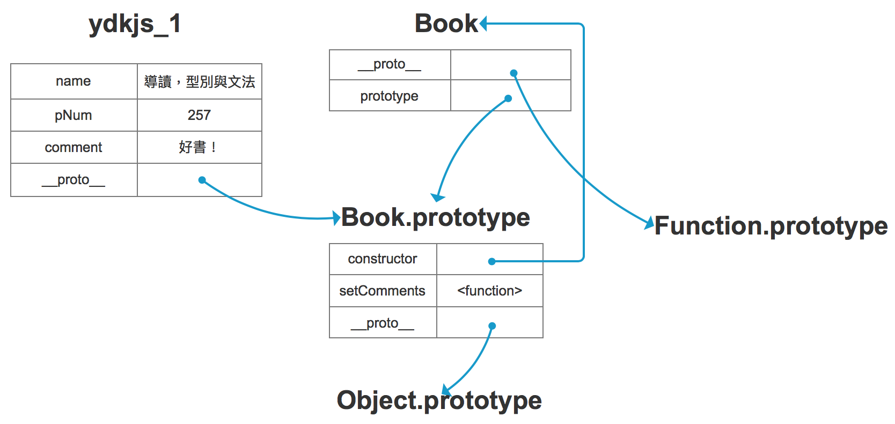

學習你懂JavaScirpt嗎?
前言
這是參考這是參考2019 iT 邦幫忙鐵人賽的你懂 JavaScript 嗎？這篇文章來學習和記錄
你懂JavaScript嗎？運算子、運算式、值與型別、變數、條件式、迴圈
這裏主要內容為程式設計簡介，在此可看到初䌣階段所必須理解的各種專有名詞。
程式碼(Code)
程式(program)又稱原始碼(source cde)、程式碼(code)、用來表示一群執行特定工作的指令，也可以說是述句組成的集合。
語法(Syntab)
規範有交指令與組合的規則，稱為電腦語言(computer language)或語法(syntax)。可想成若希望能編寫電腦可懂的語言，就必須遵循一套規則來撰寫，而這個規則𣄵是語法，就和我們平常溝通所說的語言的文法是一樣的。
述句(Statement)
會執行特定工作的字詞、數字或運算子(operator)組合，即是述句(statement)，例如:a = b+1就會執行b+1並將結果指定給a。
字面值(Literal Value)
獨立存在的值， 沒有存在於任何變數中，到如:a = b + 1中的1。
直譯器(Interpreter)與編譯器(Compiler)
直譯器與編譯器可將程式碼由上到下逐行轉為電腦可懂的命令。其差別在於時機點
直譯(interpret)：在程式執行「時」做轉換。
編譯(compile)：在程式執行「前」做轉換，然後會產出編譯後的指令，因此之後執行的是這個編譯後的結果。注意，JavaScript引擎在每次執行前即時編譯程式碼，接著立刻執行編譯後的指令。
運算子(Operaors)
對變數或值進行操作的字元，例如：a = b + 1中的=和+。
JavaScript有以下幾種運算子。
指定運算子(assignment)：其實就是等號運算子(
=)來進行「指定」的工作，當計算完畢等號右邊的值後，接著將結果放進等號左邊的變數，這個戶進去的動作就是指定。例如：a = b +1，就是將b + 1的結果放到a。算數運算子(math):進行加(
+)減(-)乘(*)除(/)的運算，例如:b + 1。複合指定運算子(compound assignment):
+=、-=、*=和/=將算術運算子和指定運算子結合在一起，例如:a += 1, 等同於a = a + 1。遞增運算子(increment/decrement):
++(遞增)與--(遞減),例如a++，等同於a= a+1。物件特性的存取運算子(object property access:):利用
.(點記號法，dot notation)或[](方括號記號法，bracket notation)的方式存取物件的特性，例如:obj.a或obj['a']，.因為簡單便利較常使用，但[]卻可在索引值是變數或有特殊字元時能保證完成值的存取，例如:obj[]'h e l l o'(有空白)、obj['#$%^&'](特殊字元)、obj['123'](開頭為數字)。𠯌想了解命名規則，待變數命名的部分會再詳述。相等性運算子(equality):可分為
==(寬鬆相等)、===(嚴格相等)、！=(寬鬆不相等)、!==(嚴格不相等)，主要差異是做值的比較時是否會做強制轉型。比較運算子(comparison):
<(小於)、>(大於) 、<=(小於等於)、>=(大於等於)例如:a > b表示比較a是否大於b。注意比較結果一定會是布林值。邏輯運算子(logical):
&&(and)、||(or)，例如:a || b表示選擇a或b，常用於表達複合條件，設定初始值。位元運算子(bitwise):將運算元當成32位元的0和1來看待，位元運算子將運算元以二進位的方式處㻫，接著以JavaScript數字型態回傳結果。例如:
5 & 1會被看成0101 & 0001，得到結果0001，回傳1。 點此看更多範例。字串運算子(string)：
+可串接兩字元，並回傳結果，通常用連接變數與字串。不過目前改用ES6的字串模板(string template)了，使用${ variable_name}即可代入變數，而不需再用+與雙/單引號拼湊字串，方便許多，範例如下1
2
3
4
5
6
7const name = 'Summer';
// 使用字串運算子
const greetings_1 = 'Hello ' + name + '!'; // "Hello Summer!"
// 使用字串模板
const greetings_2 = `Hello ${name}!`; // "Hello Summer!"條件(三元)運算子(conditional/ternary):條件(三元)運算子接再兩個運算元作為值且一個運算元作為條件。語法是
條件?值1：值2。若「條件」為true，運算子回值「值1」,否則回傳「值2」。如下，條件count <= 0得到false, 因此得到prompt為還有存貨」。1
2
3
4const count = 10;
const prompt = count <= 0 ? '全部賣完了' : '還有存貨';
prompt // "還有存貨"逗點運算子(comma):
,用來隔開多個運算式並由左至右循序執行，最後會回傳最右邊的運算式的結果，通常用於(1)for迴圈內部，讓多個變數能在每次迴圈中被更新;(2)變數宣告。1
2
3
4
5
6
7
8
9for(let i = 0, j = 10; i < j; i++, j--) {
console.log(`i: ${i}, j: ${j}`);
}
// i: 0, j: 10
// i: 1, j: 9
// i: 2, j: 8
// i: 3, j: 7
// i: 4, j: 6一元運算子(unary):一元運算是只需要一個運算元的運算，例如:delete 運算子可刪除(隱式宣告的)物件，物件的(非內建)屬性或陣列中經由指定索引而找到的物件。其他的一元運算子還有typeof等。
1
2
3
4
5
6
7
8
9
10
11
12
13
14
15const x = 1;
y = 2;
const product = {
name: 'apple',
count: 100,
}
delete x // false
x // 1
delete y // true
y // Uncaught ReferenceError: y is not defined
delete product.count // true
product // {name: "apple"}關係運算子(relational)：關係運算子比較兩運算元並根據比較結果回傳布林值。例如：in運算子可得知特定屬性是否存在於物件中，instanceof可用來判斷是否為指定的物件型別。
in 運算子的範例。
1
2
3
4
5
6
7const product = {
name: 'apple',
count: 100,
}
'name' in product // true
'valid' in product // falseinstanceof運算子的範例
1
2product instanceof Object // true
product instanceof Array // false
運算式(Expression)
對「某個變數或值，或以運算子結合起來的一組變數或值」的參考(reference)。例如:a = b+1這個述句中有四個運算式，分別是1、b、b +1、a = b + 1，其中1是字面值運算式(literal value expression)、b是變數運算式(variable expression)用來取得變數的值、b + 1是算術運算式(arithmetic expression)用來進行加法運算，a = b + 1是指定遲算式(assignment expression)用來將結果指定給變數存起來。這裡順道一提「呼叫運算式（call expression）」，意即函式呼叫運算式本身，例如：alert(a)
值與型別(Values&Types)
型別，指的是「值的不同的表示法」，主要分為兩種「基本型別」(pirmitives, 即number、string、boolean、null、undefined、symbol)和「物件型別」(object)。
基本型別(Primitive Types)
number 數字，例如：12345。
string 字串，例如:
Hello Worldboolean 布林，例如：true、false。
null
undefined
symbol
物件型別
除了基本型別外的資料型別都是物件，物件型別又分以下子型別
array 陣列：使用數值化索引來儲存值，而非如物件是使用屬性來儲存值。
function函式：一個函式是指一段具名的程式碼片段，我們可藉由呼叫其名稱來執行它，可簡化重複進行的工作會包裝特定功能的程式碼，並且函式可接受參數、回傳值。這裡會牽涉到另一個概念「範疇（Scope）」，範疇是指一群變數或這些變數如何透過名稱來存取的規範而組成的一個集合，關於範疇之後會再詳述。
1
2
3
4function sayHi(name) {
console.log(`Hi, I am ${name}`);
}
sayHi("Jack");// Hi, I am Jackdate 日期
在型別之間進行轉換(Converting Between Types)
我們有時候會需要將資料在不同型別間轉換，例如，遇到在表單中輸入一連串的金額(此時是字串)，接著計算金額時就會希望將這些字串轉成數字來做加減乘除的操作，這時候就可能需要做轉型，從字串轉成數字。
例如、小明在蝦X買了一件商品準備在母親節送給媽媽，並選擇貨到付款。來看看商品金額、運費和總金額，商品金額(product)是100(以定串型態存在)，運費(shipment)也同樣是100(以數字型態存在)，𫍇時候總金額total是？
1 | const product = "100"; |
咦？怎麼會正100100！
1 | const total = product + shipment; |
原來是因為若兩值資料型別不同，當其中一方是字串，+所代表的就是字串運算子，而將數字強制轉型為字串，並連接兩個字串。解決就是使用Number強制轉型(coerce)，將字串的部份轉為數字就可以做數學運算了。
1 | const product = "100"; |
除了強制轉型，來看在比較兩個非相同型別的值時候會發生隱含的(implicit)轉型。
例如，小明想要比較買這個商品付這運費划算嗎？運費該不會比商品還貴吧？
1 | const product = "100"; |
咦？一個是字串，一個是數字，是怎麼能做比較？這是由於JavaScript偷偷做了(隱含的)轉型的原因，那…到底做了什麼呢?
product === shipment: 不做轉型，因此型別對比較是有影響的。product == shipment: 會強轉型，規則是(1)布林轉數字；(2)字串轉數字；(3)使用valueOf()將物件取 基本型別的值，再做比較。關於強型轉型的詳細說明之後會再詳述或參考規格。小明看到商品價格與運費居然相等，還是先湊個免運再買吧！
typeof
typeof 可用於檢測值的型別是什麼。
1 | console.log(typeof "Hello World");// string |
這裡會看到幾個有趣的(奇怪的)地方…
null 是基本型別之一，但
typeof null卻得到object,而非null!這可說是一個bug，可是若因為修正了這個bug，則可能會導致很多網站壞掉，因此就不修了！雖然說function是物件的子型別，但
typeof functon(){}是得到function而非object, 和陣列依舊得到object是不一樣的。NaN表是是無效的數字，但依舊還是數字，因此在資料型別的檢測
typeof NaN結果就是number。不要被字面上的意思「不是數字」(not a number)給弄糊塗了。另外，NaN與依何數字運算都會得到NaN，並且NaN不大於，不小於也不等於任何數字，包含NaN它自已。
內建方法(Built-In Type Methods)
意即物件以屬性(或稱方法)的形式對外提供的行為，例如
1 | const prompt = "Hello World"; |
這背後的原因是每個型基本上都會其物件包裏器(object wrapper,又稱原生natives)的型態做對應使用，例如資料別string的物件包裹器型態就是String，而就是這個包裹器型態在其原型(prototype)上定義了許多屬性和方法，因此這些資料型態就能和物件般擁有屬性和方法以供使用。
相等性與不等性
相等性(Equality)
關於相等性的運算子有四個「==」(寬鬆相等性loose equality)、「===」(嚴格相等性strict equality) 、「!=」和「!==」。寬鬆與嚴格的差異在於檢查值相等時是否會做強制轉型，==會做強制轉型，而===不會。
1 | const a ='100'; |
另外，關於值的儲存方式有傳值「pass by value」和傳址/參考「pass by referece」兩種，其中pass by value又可再細分是否為「pass by sharing」（可參考這篇）、基本型別是值，而物件型別是傳址。當比較兩物件時，比較的是儲存的位置，因此看起來是相同的物件，但比較結果卻是不相同的。
1 | const a = [1, 2, 3, 4, 5]; |
不等性(Inequality)
關於不等於性的比較運算子有>、<、>=、<=共四種，在這裡有幾種狀況需要注意
若比較的值都是字串，則以字典的字母順序為主。
1
console.log("ab" < "cd");//true
若比較的值型別不同，由於值的不等性比較沒有嚴格不相等這重性況，因此，為論什麼樣的比較都會被強制轉型為數字，無法轉為數字的就會變成NaN。
1
2
3
4
5console.log("99" > 98);//true, 字串"99"被強昀轉型為數字 99
console.log("Hello World" > 1);//false 字串"Hello World" 無法轉為數字，變成NaN
console.log("Hello World" < 1);//false
console.log("Hello World" = 1);//falseNaN不大於、不小於、不等於任何值，當然也不等於自已。
1
2
3
4console.log(NaN > NaN);//false
console.log(NaN < NaN);//false
console.log(NaN === NaN);//false
console.log(NaN == NaN);//false程式碼註解(code Comments)
//和/*...*/。程式碼註解有多重要就不用再提了吧！
變數(Variables)
變數是儲存值的地方，又稱為符號佔位器(symbolic placeholder),例如：a = b + 1中的a和b。變數的作用是「管理程式的狀態」，讓我們能將程式中各種會變動的狀態(也就是值)存起來並搭配運算子組成運算式做一些運算。注意，JavaScript是弱型別的語言，意即宣告變數，賦值後仍可改變值的資料型別。
1 | // 用 var 宣告一個物件 |
常數(Constants)
ES6使用const來宣告常數，代表這變數的值不會改變，在嚴格模式下還會報錯。
1 | onst PI = 3.14; |
命名規則
變數的命名必須要為有效的識別字，何謂有效？就是必須以a-z、A-Z、$(錢字號)或_(底線)開頭，之後可加上a-z、A-Z、$(錢字號)、_(底線)和數字0-9，並且不可以是關鍵字或保留字。變數的命名規則同樣也適用於物件特性的命名，只是物件特性的名稱可為關鍵字或保留字。
1 | var happy = 'happy'; // 這是合法的 |
什麼是關鍵字？又什麼是保留字
「關鍵字」（keyword）是指在目前ECMAScript中有特定用途的英文字詞，而「保留字」（reserved word）則是系統留爭，雖然目前尚未用到但未來可能有其他用途的字彙。再次強調，不管是關鍵字或保留字都不能做變數名稱使用。
區塊(Blocks)
區塊是由一對大括號(curly-brace pair、{...})所規範出來的範圍。
1 | if (count > 10) { |
條件式(Conditionals)
表達條件的𤆧法有if述句、switch述句、條件(三元)運算子和迴圈，以下分別述之。
if述句，括號內的即是條件，若條件為真，則有指定的事情，括號內的條件放置運算式，運算結果是布林值true或false，若非布林值就會強制轉型(例如：0或空字串會被轉為false, 而其他就會轉為true)。範例如下，若商品金額大於運費，就買； 否則就不買。
1
2
3
4
5
6
7
8const product = "100";
const shipment = 100;
const total = Number(product) + shipment; //200
if (product > shipment) {
console.log("But it !");
} else {
console.log("Do not buy it!");
}結果得到「Do not buy it!」。
switch述句等同於if-else的縮寫，依靠break來決定是否要持續進行下一個case述句，若沒有break就會「落穿而過」。範例如下，這裡有一個檢測庫存的簡易範例，假設目前庫存數量為50，當庫存為0～2時提示要趕快進貨補庫存，庫存到達50時顯示庫存充裕，庫存到達100時提示貨品是不是賣不掉，其他狀況都顯示為運作正常。
1
2
3
4
5
6
7
8
9
10
11
12
13
14
15const count = 50;
switch (count) {
case 0:
case 1:
case 2:
console.log("快賣完了！趕快進貨！");
break;
case 50:
console.log("庫存充裕");
case 100:
console.log("是不是賣不後！？")
default:
console.log("運作正常");
break;
}但出乎意料的是，結果印出「庫存充裕、是不是賣不掉了！？、運作正常」
1
2
3庫存充裕
是不是賣不掉了！？
運作正常這是因為如果沒有加入break，一豆某個符合條件了，托下來的case無論侜合與否都會被執行，也就是剛才所提到的「落穿而過」。
加入break修正一下。
1
2
3
4
5
6
7
8
9
10
11
12
13
14
15
16
17const count = 50;
switch (count) {
case 0:
case 1:
case 2:
console.log("快賣完了！趕快進貨！");
break;
case 50:
console.log("庫存充裕");
break;
case 100:
console.log("是不是賣不後！？")
break;
default:
console.log("運作正常");
break;
}結果印出
1
庫存充裕
- 條件(三元)運算子(conditional/ternary)
- 迴圈(loops)使用條件式來判斷迴圈是否繼續或停止。
Truthy & Falsy
在JavaScript中會被轉為false的值有
""空字串0,-0,NaN
null
undefined
false
而除了以上之外，都會被轉為true舉例如下
Hello World非空字串42非零的效數字
[],[1, 2, 3]陣列，不管是不是空的{},{ name: 'Jack'}物件，不管是不是空的function foo(){}函式true
如果真的很不確定到底會轉成什麼，可以使用
!!做測試1
2
3!![] // true
!!{} // true
!!NaN // false
迴圈(Loops)
重複一組動作，直到檢測條件不成立為止。迴圈的形成有很多動，最常用的就是while迴圈(while或do…while)和fot迴圈兩種。
while迴圈
while迴圈的構成有以下要素：測試條件和區塊，而每次執行區塊時就稱為一次迭代(iteration)。
whilevsdo...while
兩者的差異在於while是先測後跑，而do...while是先跑後測。
來看第一個簡單例子，假設商品數量目前有五個，每賣掉一個就將庫存減一，當全賣完(及庫存為零)的時候就跳出迴圈，並印出「全部賣完了」的訊息。
1 | let product = 5; |
1 | 買一個 |
但下面這個例子就超有不同了，此時更改商品數量為零，剛剛提到while是「先測後跑」，因此當檢驗測試條件時，發現product > 0得到fals,也就不會進入區塊了，直接印出「全部賣完了」的訊息。
1 | let product = 0; |
再來看while...loop，這個例子並無異狀，跟第一個例子所得到的結果完全相同。
1 | let product = 5; |
1 | 買一個 |
但是…剛剛提到while...loop是「先跑後測」，我們又將商品數量改為零，此時會先進入區塊，依序印出「買一個」、商品數量減一、顯示「現在還剩-1個」、最後才檢驗測試條件、終止迴圈的執行，印出「全部賣完了」的訊息。
1 | let product = 0; |
1 | 買一個 |
break
使用break跳出迴圈。
範例如下，在product為2的時候跳出迴圈。
1 | let product = 5; |
1 | 買一個 |
continue
使用continue跳過本次迭代，迴圈依舊持續進行。
範例如下，在product為2的成候忽略之後要執行的console.log(現在還剩 ${product} 個);直接進入下一次迭代。
1 | let product = 5; |
1 | 買一個 |
for迴圈
for迴圈有三個子句-初始化子句、條件測試子句、更新子句。
初始化子句，例如：
let product = 5條件測件子句，例如：
product > 0更新子句，例如:
product--1
2
3
4
5for (let product = 5; product > 0; product--) {
console.log("買一個");
console.log(`現在還剩 ${product}個。`);
}
console.log("全部賣完了");1
2
3
4
5
6
7
8
9
10
11買一個
現在還剩 5個。
買一個
現在還剩 4個。
買一個
現在還剩 3個。
買一個
現在還剩 2個。
買一個
現在還剩 1個。
全部賣完了
你懂JavaScript嗎？-變數、嚴格模式、IIFEs、閉包、模組、this、原型、Polyfill與Transpiler
上面有大致聊過了一些基本普識，像是運算子、運算式、值與型別、變數、條件式、迴圈，本文還會再探討一些基礎概念，像是
變數的存取規則，包含函式範疇、拉升、巢狀範疇。
嚴格模式：一個讓程式碼變得更，更容易優化的方法。
更多關於範疇和函式的應用，包含IIFE、閉包、模組
this：到底是指哪個？這個還是那個？應該不少人都黑人問號
原型可說是物件的一種fallback機制，並且提供了行為委派。
舊功能與新特色的共存，可使用Polyfill和Transpiler來做兼容。
變數(Variable)
這個部份要來談關於變數的存取規則，例如：範疇、拉升等。
函式範疇(Function Scope)
函式會建立自已的範疇，其內的識別字(不管是變數、函式)僅能在這個函式裡面使用。如下在全域範疇底下，是無法存取foo內的a、b、c和bar，否則會導致ReferrenceError；但在foo自已的函式範疇內，可以存取a、b、c和bar。
1 | function foo(a) { |
拉升(Hoisting)
在程式執行前，編譯器(compiler)會先由上到下逐行將程式碼轉為電腦可懂的命令，然後再執行編譯後的指令。在這個編譯的階段，編譯器找出所有的變數並繫結所屬範疇，但不賦，所以此刻變數所帶的值是undefined; 而在執行階段，JavaScript引擎才會處理給值的事情。
我們可以把這個過程想像成是嫄這些變數「提升」到程式碼的最頂端，如下範例所示，因此當印出a的值的時候，會是已宣告但還沒賦值的狀態，也就是有這個變數，但其值是undefined，一直到程式執行了，才給值。因此，我們可以在程式碼任何地方呼叫運用這變數，但只有在正式宣告之後才能有正確的值可用，在宣告之前使用都會得到undefined。
1 | var a; // 編譯時期的工作 |
巢狀範疇(Nested Scope)
若在目前執行的範疇找不到這個變數的時候，就會往外層的範疇搜尋，特續搜尋直到找到為止，或直到最外層的全域範疇(globl scope，在瀏覽器底下就是指window)。
如下console.log(a + b)中，b無法在foo中找到，但可從全域範疇中追出來。
1 | const foo = (a) => { |
相較於巢狀範疇是以函式為劃分單位，區塊範疇就是以大括號為界線了。
嚴格模式(Strict Mode)
嚴格 鄉簡單說就是為了預防開發者的一些小心或錯誤的行為，JavaScript引擎協助做了一些檢測的工作，當開發都誤用時就把錯誤丟出來。可參考MDN。
範例如下，在未宣告變數而賦值機狀況下，會無預警的產生一個全域變數，但若使用嚴格模式(use strict)則會禁止這行為外，還會報錯，告知開發都變數尚未被定義。
1 | 'user stict'; |
就把它想像成是一個諄教誨的好者師！總是願意告訴你殘忍的實話…
作為值的函式(Function as Value)
這標題看起來有點怪怪的(?)但其實也只是要說明，函式本身就和其化的值一樣，是可以被指定給某變數、當參數傳遞或當成其它函式的回傳值。記得，函式也只是物件的子型別而已， 沒有什麼特別的。
指定給某個變數，如下，指定給foo。
1 | var foo = function() { |
當參數傳遞，如下，將foo當成是bar的參數傳入。
1 | var foo = function () { |
當其他函式的回傳值，foo是baz的回值，並將結果指定給result。
1 | var foo = function () { |
因此，這個函式值(例如：var foo=function(){...})也可被視為是一個運算式，就稱呼它為「函式運算式」吧。之後還會提到函式宣告、函式運算式與匿名vs具名，待後續詳細的說明。
即刻調用函式運算式(Immediately Invoked Function Expression,IIFE)
IIFE是為可立即執行的函式運算式。一般的函式運算式並不會馬上執行、若要執行除了在其名稱後加上小括號外，還可以利用IIFE的𤆧式執行它。匿名或具名皆合法。使用IIFE的好處主要是不污染全域範疇。
範例如下，這是一個匿名的IIFE，a在全域範疇是找不到的。
1 | (function () { |
閉包(Closure)
閉包是指變數的生命週其只存在於該函式內，一旦離開了函式，該變數就會被回收而不可再利用，且必須在函式內事先宣告。
範例如下，在函式closure內可以存取a的值，但離開了函式closure走到全域範疇之下，就取不到a的值了，因此會被報錯「Uncaught ReferenceError:a is nto defined」。
1 | function closure() { |
模組(Module)
模組模式(Module Pattern)又稱為揭露模組(RevealingModule),經由建立一個模組實體(Moduel Instance，如下範例的foo), 來調用內層函式。而內層函式由於具有閉包的特性。因此可存取外層包含函式(Oute Enclosing Function)之內的變數和函式。透過模組模式，可隱藏私密的資訊，並對外公開API。
範例如下，CoolModule對外公開API doSomething和doAnother, CoolModule之外是無法取得其私有的something𢘊another兩個變數的值。
1 | function CoolModule() { |
this識別字(this Identifier)
this到底是指向誰一直都是個令人費解的問題。
簡單來說，this是function執行時所屬的物件，而this是在執行時期做繫結，其值和函式在哪裡被呼叫(call-site)有關。
總結規則如下，並以匹配的優先順序由高至低排列
- new 綁定：this會指向new出來的物件。
- 明確綁定：使用call、apply、bind，明確指出要綁定給this的物件。
- 隱含綁定：當函式為物件的方法(method)時，在執行階段this就會被綁定至該物件。
- 預設綁定：當其他規則都適用時，意即沒有使用bind,call, apply或不屬於任何物件的method，就套用預設綁定，在非嚴格模式下，瀏覽器環境this的值就是預設值全域物件window，而在嚴格模式下，this的值就是undefined
1 | function foo() { |
原型(Prototype)
原型可說是物件的一種callback機制，當在此物件找不到指定屬性時，就會透過原型鏈結(prototype link/prototype reference)追溯到其父物件上。範𠕥如下，若想存取bar.a但由於bar並為a屬性。因此𠺾會透過原型鏈結找到foo,並得偌100這個值。
1 | var foo = { a: 100 }; |
另外，原型最常應用於「行為委派」(behaviro delegation)，如上例所示，將物件bar的行為委派給foo, 這也是常聽到很類似於其他語言的類別的繼承功能，但其實完全不同。
舊功能與新特色的共存
面對新舊功能並存的狀況要怎麼處理呢？這裡要介紹兩種方法-Polyfill和Tranxpiler。
Polyfill
Polyfilling的意思就是依據一個新功能的定義，製作具有相同行無，而能在較舊的JavaScript環境執行的程式碼，候話說就是為舊瀏覽掛載新功能。
這裡來看一個例子，針對isNan的改進…
isNan
NaN表示值無效的數字，它會產生的原因是
做數字運算時的兩個運算元的資料型別並非都數字或無法轉成有的十進位或十六進位的數字。
無意義的運算，例如:0/0, Infinity/Infinity。
以上𣄵會產生NaN。
在ES6以前，開發者使用isNaN在數學運算或解析字串後檢測得到的結果是否為合法的數字，其實就是檢測是否為NaN，其過程為先將輸入值使用Number強制轉為數字。無法轉為有的數字而得到NaN時就判定等於NaN，結果得到true。
範例如下，空物件{}經過isNaN判斷是NaN，意即不為數字
1 | console.log(isNaN({}));// |
其它範例還有..
1 | isNaN(123) // false |
但這檢測方式常常會讓開發者得到讓人容易誤解的結果(像是空物件{}就真的不等於NaN呀)，因此ES6推出了Number.isNaN，Number.isNaN不會經過轉為數字的這過程，而是直托判斷型別否為數字且是否等於NaN。承上範𠕥，檢測空物件{}是否為NaN，得到false
1 | Number.isNaN({}) // 直接檢查空物件是否為 NaN，得到 false |
同樣也來看剛才的範例…
1 | Number.isNaN(123) // false |
雖然ES6出了這個新功能，但不見得所有的瀏覽器都會支援，因此對於較舊瀏覽，就掛個polyfill來模擬這個新功能。
polyfill如下
1 | if (!Number.isNaN) { |
ES6定義了常數Number.NaN來表示NaN
1 | isNaN(NaN); // true |
由於實作 polyfill 難免會有缺漏或疏失，這裡提供兩個經過嚴格審核的函式庫以供使用-es5-shim 和 es6-shim。
Transpiler
並非所有的新功能都能經由polyfill掛載到舊環境上，這裡提出另一個解法，將帶有新功能的程式碼換成等效的舊有程式碼碼可以了，也就是使用transpiler做轉譯。
例如，ES6推出了新功能「預設參數值」。
1 | function foo(a = 2) { |
但這在舊的JavaScript引擎中是無 的，因此transpiler就會將以上程式碼變形，翻譯成等 的舊程式碼。
1 | function foo() { |
這麼做的好處是在開發階段開發者依然能享受新功能帶來的好處，但又能兼顧到新舊瀏覽器的狀況。這裡也推薦一些很棒的 transpiler，像是 Babel、Traceur 等。
你懂JavaScript嗎?型別(Types)
主要會談到
- 何謂「型別」？內建型別有哪些？常見疑難雜症與解法
- 未定義(undefined) vs 未宣告(undeclared)
何謂「型別」？
「型別」是固有的、內建的特微，能唯一識別特定值的行為。例如：數字123和字串’123’就是不一樣的，數字123可做數學運算處理，而字串’123’可能就是做些顯示到畫面上的操作。
內建型別(Built-In Types)
JavaScript定義了以下七種內建型別
number數字，例如:12345
string字串，例如：
Hello Worldboolean布林，例如:true、false
null
undefined
object物件，例如：
{ name: 'Jack' }、{1, 2, 3}、function foo() { ... }symbol
其中，這些內建型別又可分兩大類-基本型別(primitives)和物件型別(object)。基本型別有number、string、boolean、null、undefined、symbol，而物件型別就是物件與其子型別(subtype)，例如：物件、陣列、函式、日期等。
我們可用typeof來檢測值的資料型別為何。
1 | console.log(typeof 'Hello World');//string |
這裡會看到幾個有趣的(奇怪的)地方…
null 是基本型別之一，但
typeof null卻得到object，而非null！這可說是一個bug，可是若修正了這個bug則可能會導致很多網站壞掉，因此就不修了！雖然說function是物件的子型別，但
typeof functon(){}是得到function而非object，和陣列依舊得object是不一樣的。另外順道一提函式是一種「可呼叫的物件」(callable object),它擁有[[Call]]的內部特性，讓它成為能夠被調用的物件。NaN表示是無效的數字，但依舊還是數字，因此在資料型別的檢測
typeof NaN結果就是number，不要被字面上的意思「不是數字」(not a number)給弄糊塗了。另外、NaN與依何數字運算都會得到NaN、並且NaN不大於、不小於也不等於依何數字，包含NaN它自已。
先來解決剛剛提到的幾個問題。
Q1:如何檢測null？
之前有提到的Truthy&Falsy的概念，在做比較時會被轉型為fals的值有
""空字串0，-0，NaN
null
undefined
false
而除了以下之外，都會被轉無true,與例如下
Hello World非空字串42非零的有效數字
[],[1, 2, 3]陣列，不管是不是空的{},{name:'Jack'}物件，不管是不是空的function foo(){}函式true
我們可利用null會被typeof檢測為object並且會轉為false的結果來驗證是否為null.
1 | const happy = null; |
得到「我是null !」，輕鬆解決，得分！
Q2:既然函式與陣列都是物件，那其中的屬性length有什麼不同?
函式的length是指參數個數，而陣列的length是指內部成員個數。
1 | function testMe(arg1, arg2, arg3) { |
Q3:typeof檢測的對象是誰?
再次強調，變數沒有型別，變數可在不同時間點持有不同型別的值，因此，只有「值」才有型別，雖然我們可用typeof檢測某個變數所儲存的值的型別，至記得並不是檢崱變數本身，而是變數所存的值。
1 | const name = 'Jack'; |
Q4:辨識物件子型別的方法?
稍後在Natives(原生功能)的部分會說明取得物件內部分類的方法，這裡就先大略提一下。
物件型別的值其內部有一個[[Class]]屬性來標記這個值是屬於物件的哪個子分類，雖然無法直接取用，但可透過Object.prototye.toString間接取得，範例如下
1 | console.log(Object.prototype.toString.call([1, 2, 3])); //[object Array] |
未定義(undefined)vs未宣告(uneclared)
未定義(undefined):未賦值的變數所儲存的值是undefined,對此變數做typeof也會得到
undefined未宣告(undeclared):變數在未宣當並使用的狀況下會得到ReferenceError，並指出該變數並未宣告； 變數在未宣告並賦值的狀況下，在嚴格模式下會報錯ReferenceError，而在非嚴格模式，變數會成為全域變數的屬性。注意，對未宣告的變數做typeof也會得到
undefined。
總結𣄵是，無論變數是未定義或未宣告、typeof這兩種狀況皆會得到undefined。那麼，對未宣告的變數做typeof而得到undefined，有什麼用處呢?
對未宣告的變數做typeof
對未宣告的變數做typeof而得到'undefined'可說是一保護措施，可避免瀏覽器丟出ReferenceError的錯誤訊息，在撰寫測試特定條件時常會用到。
範例如下，我們可能在非正式環境下會引用了某支js檔案，其中會設定DEBUG為ture，而其它檔案會根據DEBUG變數是否被宣告並設定為true時做出相對應的事情。
1 | if (typeof DEBUG !== 'undefined') { |
或著，我們也可以不用typeof的作法，而改用檢測window屬性的方式，同樣也不會丟出ReferenceError。
1 | if (typeof window.DEBUG) { |
再或者，使用依存性注入(dependency injection)的方式也是可以的，將要檢測的條件當參數傳入函式，若條件不存在則使用預設值。
1 | function doSomethingCool(DEBUG) { |
只是這解法已被ES6的預設傳入參數(Degault Paramaters)取代了。
你懂JavaScript嗎？值(Values)Part1-陣列、字串、數字
主要會談到關於陣列、字串、數字的錯誤操作方式與疑難雜症的解法。
陣列(Array)
陣列是由數值做索引，可由任何型別值所構成的群集。在𫍇裡要先提到兩個容易誤用的重點-(1)稀疏陣列誤存undefined的元素和(2)使用「很像數字」的字串當成鍵值來存資料時，鍵值被強制轉型為數字的狀況，最後會提到「類陣列」的操作。
稀疏陣列(Sparse Array)
稀疏陣列是指陣列中有插槽(slot)可能未定義其值或被略過而導致存放undefined元素的狀況，範例如下。
1 | const list = []; |
這會有什麼問題呢?
由於這可能是一些疏忽或鏌誤操作所造成的，因此會對length有錯誤的期待，例如，可能原本其待list的長度為2，但因錯置了字串'World'的位置，導致list的長度為3，存之後陣列的操作上可能會出現很難發現的bug。
這種bug就是所謂的地雷，你永遠不知道它什麼時候會爆炸，一旦爆炸就死傷慘動、很難挽救。
鍵值的強制轉型
若使用「很像數字」的字串當成鍵值來存資料，鍵值會被強制轉型為數字，這也會造成後續處理上的難題，像是產生剛剛提到的稀疏矩陣的狀況(又是地雷一枚)。
1 | const list = []; |
陣列其實也就是物件的子型別而已，所以若想用字串當成鍵值來存放資料也是可以的，只是鍵值會被強制轉型為數字。如上所示，鍵值20被強制轉為數字20，導致list成為稀疏陣列，其長度就被誤判了。因此，若索引值是數字就用陣列，而非數字就用物件吧！
類陣列(Array-Like)
類陣列是指以數值索引的值所成的群集，它可能是串列但並非真正的陣列，例如：DOM物件操作後所得偌的串列、函式引數所形成的串列(ES6已棄用)。而為了能操作這些類陣列的元素，就必須將類陣列轉為真正的陣列，這樣就進行indexOf、concat、forEach等的操作了。
DOM物件操作後所得到的串列，範例如下。
1 | const list = document.getElementsByTagName('div'); |
函式引數所形成的串列，範例如下，取得不定個數的引數。
1 | function foo() { |
得到
(1)
{ [Iterator] 0: 'hello', 1: 'world', 2: 'bar', 3: 'baz', [Symbol(Symbol.iterator)]: [λ: values] }(2)
[ 'hello', 'world', 'bar', 'baz' ]
以下可知，函數引數所形成的類陣列，在經過 slice 轉換後可得到真正的陣列以供後續操作。注意，slice會回傳一個指定開始到結束部份的新陣列，因此在不傳人任何參數的狀況下等同於複製陣列。
或使用Array.from也會有同樣的效果。
1 | function foo() { |
字串(String)
這部分還是繼續來看關於類陣列的處理。
可變(Mutable)與不可變(Immutable)
JavaScript在創建變數，賦值後是可變的(mutable)；相較於mutable，不可變(immutable)就是指在創建變數、賦值後便不可改變，若對其任何變更(例如：新增、修改、刪除)，就會回傳一個新值。
當需要更新一個變數的時候，若值的型態為基本型態，則是不可變的，意即只要改變就會回傳一個新的值； 若值的型態為物型態，則由於物件是使用call by reference的方式其享資料來源，因此只是就地更新而已，或說是更新這個位置所儲存的值，而非回傳一新的值。
字串的類陣列處理
字串可不可以當成陣列來處理呢？可以的，而且可以借用陣列的方法來做些事情，只是要注意，不能變更陣列的內容。
插入間隔字元
如下，借用陣列的 join 來實作在字串間插人字元。join和map都不會變動到原始陣列的內容，因為回傳的結果是一個新的值。
1 | const str = 'foo'; |
反轉
但revere是會改變原始陣列資料的，因此字串就不能借用。如下所示，arr經反轉由 ['b', 'a', 'r'] 改變為 ["r", "a", "b"]。
1 | const arr = ['b', 'a', 'r']; |
所以若想借用陣列的reverse來反轉字串，就會被報錯了。
1 | const str = 'foo'; |
面對無法借用陣列方法的狀況，可先將字串轉為陣列，在進行操作(像是反轉)，最後再轉回字串即可。
1 | const str = 'foo'; |
但以上是不是看起來眼醜陋又麻煩？因此最好的方法是先把資料存成陣列，再使用陣列的方法操作，後續若需要使用字串表示，再用join打平串起就可以了！
數字(Number)
JavaScript的數字(number)型別包含兩種-整數和帶有小數的浮點數，其中數字的實作是以IEEE 754 為標準，也就是浮點數(floating-point number)的雙精度(double precision)格式，意渡64位元的二進位數字。
如何表達「非常大」或「非常小」的數字？
非常大或非常小的數值以「指數」的方式呈現。
1 | const a =1E20; |
如何指定小數位數?
使用toFixed指定要顯示的小數位數，會做四捨五入，不足會補零，注意結果會以「字串」格式呈現。
1 | const a = 123.456789; |
如何指定有效位數?
使用toPrecision指定有效位數，會做四捨五入，不足會補零，注意結果會以「字串」格式呈現。
1 | const a = 123.456789; |
注意，數字後加上.會讓JavaScript引擎先判定為小數點，而非屬性存取。因此，若希望100.toPrecision(1)能正常顯示，應該為100..toPrecision(1)或(100).toPrecision(1)。
如何表示其它基數的數字?
十六進位：加上前綴「0x」或「0X」
八進位：加上前綴「0o」或「0O」
二進位：加上前綴「0b」或「0B」
1 | console.log(0xAB);//171 |
頭昏眼花了嗎？0x、0o、0b 可不是表情符號喔！
如何表示十進位小數?
只要是使用IEEE754來表示二進位浮點數的程式語言都有一個夢靨-無法精準地表示十進位的小數，範例如下。
1 | console.log(0.1+0.2 === 0.3);//false |
將 0.1、0.2 和 0.3 分別轉為二進位來看
- 0.1 轉成二進位表示為 0.0001100110011…（0011 循環）
- 0.2 轉成二進位表示為 0.00110011001100…（1100 循環）
- 0.3 轉成二進位表示為 0.0100110011001…（1001 循環）
因此 0.1 + 0.2 永遠不會剛好等於 0.3。
解法是取一個很小的誤差當作容許值，若運算結果小於這個誤差值就判斷為等於，在ES6中已定義好這個常數Number.EPSILON其值為2^-52, 或實作polyfill如下
1 | if (!Number.EPSILON) { |
那…要怎麼使用這個Number.EPSILON呢?先實作一個函equal，它會判斷誤差是否小於容許值-先將兩輸入值的差取絕對值，再與Number.EPSILON做比對，若小於這個誤差值就判𪼙為兩數相等。
1 | function equal(n1, n2) { |
備註
ES6定義所謂「安全」的數值範圍為
- 整數：最大整數
Number.MAX_SAFE_INTEGER(其值為 2^53 - 1 等於 9007199254740991）、最小整數Number.MIN_SAFE_INTEGER（其值為 -9007199254740991）。 - 浮點數：最大浮點數
Number.MAX_VALUE（其值為 1.798e+308）、最小浮點數Number.MIN_VALUE（其值為 5e-324）。
如何知道數值是個整數？如何知道數值位在安全範圍內？
使用Number.isInteger來測試數值是否為整數。
1 | console.log(Number.isInteger(42));//true |
使用Number.isSafeInteger來測試數值是否在安全範圍內。
1 | console.log(Number.isSafeInteger(Number.MAX_SAFE_INTEGER));//true |
polyfill
1 | if (!Number.isSafeInteger) { |
32位元有號整數(32-bit Signed Integer)
部份運算(例如：位元運算bitwise operator)只允𧥸使用32位元的有號整數，其範圍為Math.pow(-2,31)到Math.pow(2,31)-1。
在做這類運算前必須先把數值使用|0轉為32位元的有環整數
1 | const integer = 123456789; |
你懂JavaScript？值(Values)Part2-特殊值
主要內容為探討基本型別的特殊值並能適當使用它們。
undefined與void運算子
void運算子可確保運算式不回傳任何值(其實是得到undefined),並且不修改現有值。
例如，𫍇僤有一個變數hello，其值為777，結合void運算子做運算後會得到undefined,但hello內儲存的值仍是不變的，依舊是777。
1 | var hello = 777; |
實際上會應用到什麼狀況呢？
一，運算式的結果真的希望不回傳任何值(再次強調，其實是回傳undefined)，除了直接寫「undefined」外，還可以用「void某個值」，通常會用「void0」。
1 | function sayHi() { |
二，在程式設定下，必須區別有意義和無意義的回傳值，而無意義的回傳值希望能是undefined，以避免後續誤判為「有意義」的回傳值而做了錯誤的操作，如下範例所示，這裡有一個定期檢查回傳結果的函式check，check會呼叫函式getResult來得到運算結果並確認結果為何，若沒有得到結果，就顯示經過的分鐘數；若得到結果就印出「工作完成」的訊息。在這裡無意義的回傳值是使用undefined，但當然很多開發者是比較喜歡用false或null，就看當時的需求和個人喜好摟。
1 | const interval = 60000; |
NaN(無效的數字)
NaN表示值為無效的數字(invalid number)，會產生NaN的原因是
做數字運算時的兩個運算元的資料型並非都是數字或無法轉成有效的十進位或十來進位的數字
無意義的運算，例如：
0/0、Infinity/Infinity都會得到NaN
就會產生NaN
NaN有幾個有趣的議題…以下分別討論之。
typeof
NaN既然表示是效的數字，依舊還是數字，因此在資料型別的檢測typeof NaN結果就是number，不要被字面上的意思「不是數字」(not a number)給弄糊塗了。
運算結果是NaN
NaN與任何數字運算都會得到NaN。
唯一不大於、不小於、不等於自已的值
NaN不大於、不小於也不等於任何值，包含NaN它自已。
isNaN與Number.isNaN
要如何檢測運算結果是否為有效的數字呢？那麼就來檢測是否為無效的數字-NaN就可以了，在ES6以前，開發者使用isNaN在數學運算或解析字串後檢測得到的結果是否為合法的數字，其實就是檢測是否為NaN，其過程為先將輸入值使用Number強制轉型為數字，若無法轉為有效的數字而得偌NaN時就判定等於NaN，結果得到true。
範例如下，空物件{}經過isNaN判斷是NaN，意即為無效的數字。
1 | console.log(isNaN({}));//true |
其他範例還有…
1 | console.log(isNaN(123));//false |
但這檢測方式的常常會讓開發者得到讓人容易誤解的結果(像是…大多數的人都會爭論…空物件{}就真的不等於NaN呀)，因此ES6推出了Number.isNaN、Number.isNaN不會經過轉為數字的這個過程，而是直接判斷型別是否為數字且是否等於NaN。承上範例，使用Number.isNaN 檢測空物件{}是否為NaN，得到false
1 | console.log(Number.isNaN({}));//false |
同樣也來看剛才的範例
1 | console.log(Number.isNaN(123));//false |
雖然ES6出了這個新功能，但不見得所有的瀏覽都會支援，因此對於較舊的瀏器就掛個polyfill來模擬這個新功能。
polyfill如下。
1 | if (!Number.isNaN) { |
無限(Infinity)
無限分為正無限(在ES6定義為Number.POSITIVE_INFINITY)和負無限(在ES6為Number.NEGSTIVE_INFINITY)，在數字連算中會得到無限的原因是
- 除以零，例如：
1/0得到Infinity，-1/0得到-Infinity - 溢位(overflow)，例如：
Number.MAX_VALUE + Math.pow(2,970)得到Infinity(備註)
又，無限與無限做數字運算，一般來說會得到無限。除了..
無意的運算，例如：
0/0、Infinity/Infinity都會得到NaN1/Infinity得到0，-1/Infinity得偌-0
備註：若運算結果接近Number.MAX_VALUE而非Infinity，則會取一個最接近的值為Number.MAX_VALUE，𫍇稱為「向下約整」(rounds down);同理，若運算結果接近Infinity而非Number.MAX_VALUE, 則會取一個最接近的值為Infinity，𫍇稱為「向上約整」(rounds up)
零(Zero)
零分為正零(+0)和負零(-0)，正負號在表達方向上是很有用的。其中，產生負零的原因是乘除運算中，運算元的其中一方為負數，例如：-0/1或0/-1會得到-0。
零有幾個有趣的議題…以下分別討論之。
數字轉字串vs字串轉數字
不管是正零(+0)或負霧(-0)，轉字串後一律為「0」。
1 | console.log((+0).toString());// "0" |
相反的、若從字串轉數字，則
字串正零(
'+0')會轉成數字0或報錯，但其實正零一般來說都是表示為「0」字串負零(
'-0')會轉成數字-0
1 | console.log(+'+0');//0 |
如何辨別正零和負零?
正零(+0)或負零(-0)是無法從比較運算子和相等運算子中得到差異。
1 | var a = 0; // 0 |
那到底要如何辨別正零和負零呢？
解法的𦂇驟如下
先將輸入值轉為數字，若為-0則
Number(-0)為-0,並檢查結果是否等於胕由於
1/-0得到-Infinity，因此就可檢測輸入值是否為負零
1 | function isNegZero(n) { |
稍後會再提供另一個解法-Object.is(..)
特殊相等性(Special Equality)
針對負零(-0)和NaN的比較，除了以上提過的方法外，還可以用Object.is(..)來做檢測。
Object.is(..)會比較兩值是否相等，而Object.is(..)的運作和嚴格相等是一樣的，但會將NaN、-0、和+0獨立處理。到底㤰麼定義「相等」呢？有興趣的可以參考 MDN的說明。
1 | var a = Number('Hello World');// NaN |
世紀難題都被它解決了，
你懂JavaScript嗎？原生功能(Natives)
主要會談到
何謂原生功能(Natives)?
物件包裹器、陷阱、解封裝。
各類建搆子的原生功能、原生的原型。雖然優先使用字面值而非使用建構子建立物件、還是需要來看一些需要關心的議題和警惕用的錯誤用法。
何謂原生功能(Natives)?
原生功能(Natives)其實指的就是「內建函式」(built-in function)，最常用的像是String()、Number()、Boolean()、Array()、Object()、Function()、RegExp()、Date()、Error()、Symbol()，其中null和undefined是沒有內建函式的。我們也可以將Natives當成建構子(constructor)來建立值。注意，使用建構子建立出來的值是一僤包裹了基本型別值的物件包裹器(object wrapper)，而這個包裹器在其原型(prototype)上定義了許多屬性和方法，因此這些資料型態就能如物件般擁有屬性和方法以供使用。
範例如下，使用new String('...')來建立字串值「Hello World!」，
1 | const s = new String('Hello World!'); |
說明
s是一個包裹了基本型別值String的物件包裹器，簡稱為「字串包裹器物件」，包裹了字串「Hello World!」，而非只是建立了字串本身。
s這個字串包裹器物件的原型上定義了toString方法，因此可使用
s.toString()得到字串值。使用 typeof 來判斷值的型別，例如，
typeof s檢視s的型別，結果是「物件」。使用instanceof 來判斷值是否為指定的物件型別，例如，
s instanceof String確認s為String的實體物件。使用
Object.prototype.toString取得物件的子分類、得到字串。
Internal[[Class]]
物件型別的值其內部有一固[[Class]]屬性來標記這個值是屬於物件的哪個子分類，雖然無法直接取用，但可透過Object.prototype.toString 間接取得，範例如下。
1 | console.log(Object.prototype.toString.call('Hello World'));//[object String] |
封裝用的包裹器(BoxingWrappers)
由於JavaScirpt引擎會自動為基本型別值包裹(或稱封裝)物件包裹器，因此字面值能𢁍屬性或方法可用，例如
1 | const s = 'Hello World!'; |
那麼，直托使用物件形式的物件包裹器來宣告變數，而非隱含地讓JavaScript引擎轉換，是不是比較好呢？答案是否定的，第一，這樣效能不佳，使用字面值可讓JavaScript預先編譯並快取起來！第二，沒有必要，字面值可幾乎可完全取代物件包裹器做的事情-因此，就讓JavaScript引擎自動為我們做這個封裝的工作吧。
1 | const s = new String('Hello World!');//錯誤示範！效能差！ |
物件包裹器的陷阱(Object Wrapper Gotchas)
由於直接使用物件形式的物件包裹器來宣告變數會造縑一些誤用，像是難以做條件判斷，因此非常不建議這麼做！使用之前請三思！
如下範例，使用物件包裹器宣告一個布林變數isValid，其值希望是false，但實際上卻是一個物件Boolean {true}，導致進入判斷式轉型為true, 印出訊息「可以繼續運作…」
1 | const isValid = new Boolean(false); |
怎麼辦？很簡單，「解封裝」就行啦！繼續看下去吧！
解封裝(Unboxing)
解封裝是指將底層的基本型別值取出來。
承上範例，isValid的值居然是物件Boolean {true}，只好使用valueOf來抽出底層的基型值摟，其他強制轉型的方法待後強制轉型的部份補充。
1 | isValid.valueOf()//false |
建構子的原生功能
再次強調，優先使用字面值而非使用建構子建立物件。但在這個「建構子的原生功能」部份，我們還是來看一些需要關心的議題和警惕用的錯誤用法。
Array(..)
- 不管是否使用new，陣列的物件包裹器所建立的物件是相同的，意即
new Array(...)和Array(...)同義。 - 若只傳入一個數字，則不會被當成陣列內容，而會是陣列長度來預先設定陣列的大小，實際上這是個虛胖的空陣列，而裡面沒有存任何東西，是empty。這種具有空插槽(empty slot)的陣列在做陣列處理時容易產生不可預期的錯誤。
1 | const a = Array(10); |
RegExp(..)
在正規表達式方 ，只有一種狀況會需要用到物件包裹器而非字面值，就是必須「動態地」為正規表達式建立範式(pattern)，意即new RegExp('pattern','flags')的格式。
1 | const name = 'Apple'; |
Date(..)與Error(..)
Data與Error沒有字面值格式，只能用物件包裹器作為建構子的方式建立物件。
Error需要注意的地方是，不管是否使用new，陣列的物件包裹器所建立的物件是相同的，意即new Error(...)和Error(...)同義。
Symbol(…)
Symbol同樣沒有字面值格式，若要自定義的Symbol，就要使用建構子Symbol(..)且不可在前面加上new，否則會報錯。
原生的原型(Native Prototype)
每個建構子都有自已的.prototype物件，例如：Array.prototype、String.prototype等，而這些.prototype物件擁有各自子物件的專屬行為。白話來說，就是經由建構子建立的物件與經由JavaScript引擎封裝的字面值，由於原型委派(prototype delegation)的緣故，都能使用定義.prototype的屬性和方法。例如，無論是經由String()建構子或經由JavaScript引擎封裝的字串基本型別字面值，由於原型委派(prototype delegation)的綠故，都能使用定義於String.prototype的屬性和方法。又String.prototype.XYZ可簡寫為String#XYZ，例如：String#indexOF(..)、String#charAt(..)等，其他型別都各自有其行為。
注意，不要任意修改這些預設的原生的原型(甚至建議不要無條件地擴充原生的原型，若要擴充也應撰寫符合規格的崱試程式)，這在後續強制轉型的部份會看到一虛例子。
Array.prototype是空陣列，Function.prototype是空的函式，RegExp.prototype是空的正規很達式，因此有人會拿來做為變數的初始值，雖然可能節省了重新創建新值和垃圾回收的工作而讓效能變好，但這可能會在無意間修改了這些預設的原生的原型，這是要避免的。
你懂JavaScript嗎？強制轉型(Coercion)
強制轉型(coercion)到底是的個有用的功能，還是設計上的缺陷呢?
主要會談到
強制轉型(coercion)分為兩種，分別是「明確的」強制轉型(explicit coercion)和「隱含的」強轉型(implicit coercion)，只要是程式碼中刻意寫出來的型別轉換動作，就是明確的強制轉型；反之，在程式碼沒有明確指出要轉換型別卻轉型的，就是隱含的強制轉型。
明確的強型轉型規則與範例說明。
隱含的強型轉型規則歹範例說明。
Symbol的強制轉型的規則與範例說明。
隱含的強制轉型的心酸血淚？各種令人崩潰的範例。
押象的關系式比較。
前言
強制轉型(coercion)分為兩種，分別是「明確的」強制轉型(explicit coercion)和「隱含的」強制轉型(implicit coercion)，只要是程式碼中刻意寫出來的型別轉換的動作，就是明確的強制轉型； 反之，在程式碼中沒有明確指出要轉換型卻轉型的，就是隱含的強制轉型。
範例如下，b的的值由運算式String(a)而來，這裡表明會將a強制轉為字串，因此是明確的強制轉型； 而c的值由運算式a + ''而來，當兩值的型別不同且其中一方是字串時，+所代表的是定字串運算子，要將兩字串做串接，而會將數字強制轉型為字串，並連接兩個字串，因此是隱含的強制轉型，稍後會再詳述。
1 | var a = 42; |
注意，無論是明確或隱含，強制轉型的結果會是基本型別值，例如：數字，布林或字串，
抽象的值運算
「抽象的值運算」指的是「內部限定的運算」，意即這是JavaScirpt引擎在背後偷偷幫我們做的工作，在這個部分會來探討ToString、ToNumber、ToBoolen和ToPrimitive這幾個押象的值運算，來看看到底在強轉型時背地裡做了什麼好事。
ToString
任何非字串的值被強制轉型為字串時，會遵循ES5的規格中的 ToString 來運作。
規則簡單說明如下
undefined->
undefined。null->
null。boolean的true->
true，false->false。在數字方面，非常大或非常小的數字以指數呈現，例如:
1.23e21。物件
若有定義
toString方法，則會以它自已的toString方法所產生的結果為優先，例如，陣列有自己定義的toString方法，因此[1,2,3].toString()會得到"1,2,3"。若沒有定義
toString方法，則回傳內部的屬性[[Class]]，這是一個用來標記這個值是屬於物件的哪個子分類的標籤，例如：({}).toString()會得到[object Object]。圖片來源：ToString Conversions
JSON的字串化(JSON Stringification)
順道一提JSON的字串化。
JSON的字串化JSON.stringify將值序列化(serialize)為JSON字串，這個轉無JSON字串的過程與ToString規則有關，但並不等於強制轉型。規則算簡單說明如下
- 若為簡單值，即字串、數字、布林、null，則規與ToString相同。這些能轉為JSON字串的值稱為是「JSON-safe」的值，意即只要對JSON來說是安全的(safe)，就都能轉為JSON字串。
1 | console.log(JSON.stringify(42));//"42" |
無法轉為JSON字串的非法值有undefined、function、symble、具有徝環參考(circular reference)的物件，由於它們無法轉為JSON字串，因此
JSON.stringify會自動忽略這些非法值或丟出錯誤。又，若陣列中某個元素的值無非法值則自動以null取代；若物件中的其中的一個屬性為非法值，則會非除這個屬性。若無物件具有定義
toJSON方法則會優先呼叫此方法，並依此方法之回傳值作為序列化的結果，因此，若試圖JSON字串化一個含有非法值的物件，應定義其toJSON方法以回傳適當的JSON-safe的值。範例如下。
若陣列中某個元素的值為非法值則會自動以null取代； 若物件中的其中一個屬性為非法值，則會非除這個屬性。
1 | console.log(JSON.stringify(undefined));// undefined、忽略非法值 |
具有循環參考的物件，丟出錯誤。
1 | const a = { someProperty: 'Jack' }; |
針對含有非法值的物件或具有循環參考的物件，解法是定義其toJSON方法以回傳JSON-safe的值。
範例如下，物件someObj含有非法的屬性會導致轉JSON字串時被忽略，因此定義其toJSON方法只要序列化合法的a屬性即可。
1 | const someObj = { |
再看一個範例，對於「具有循環參考的物件」該怎麼處理呢？如下，a和b是具有循環參考的物件，在先前的例子中JSON.stringify(a)和JSON.stringifg(b)會丟出錯誤「Uncaught TypeError:Converting circular structure to JSON」，因此分別定義其toJSON方法，這裡的序列化過程只包含prompt屬性且其值為字串Hello World。
1 | const a = { |
除了toJSON外，JSON.stringify也可傳入第二個選擇性參數「取代器」(replacer,可為陣列或函式)來自訂過濾機制，決定序列化過程中應該包含哪些屬性。
取代器為陣列時，陣列內的元素為指定要包含的屬性名稱。如下，指定序列化過程中只需要包含a屬性。
1
2
3
4
5
6const someObj = {
a: 2,
b: function () { }
}
console.log(JSON.stringify(someObj,['a']));// "{"a":2}"取代器為函數時，函式是用來運算要回傳以做序列化的屬性的值。如下，指定除了b以外的屬性都要做序列化。
1
2
3
4
5
6
7
8
9
10
11const someObj = {
a: 2,
b: function () { }
}
console.log(JSON.stringify(someObj, function (key, value) {
if (key !== 'b') {
return value;
}
}));
// "{"a":2}"
ToNumber
若需要將非數字當成數字來操作，像是做數學運算，就會遵循ES5的規格中的ToNumber 來運作。規則簡單說明如下
undefined -> NaN。
null -> +0即是0。
boolean 的true -> 1，false -> +0 即是0。
string -> 數字或NaN。
object
若有定義其
valueOf方法，則會優先使用valueOf取得其基本型別值。若沒有定義
valueOf方法，則會改用toString方法取得其基本型別值，再用ToNumber轉為數字，在這裡先簡化為Number(..)會來處理這一連串的流程即可。注意，以
Object.create(null)建立的null沒有valueOf或toString方法，因此在式圖轉為基本型別值的時候會出錯，丟出TypeError.圖片來源：ToNumber Conversions
範例如下。
1
2
3
4
5
6
7
8
9
10
11
12
13
14
15console.log(Number(undefined));// NaN
console.log(Number(null));// 0
console.log(Number(true));// 1
console.log(Number(false));// 0
console.log(Number('12345'));// 12345
console.log(Number('Hello World'));// NaN
console.log(Number({name:'Jace'}));// NaN
const a ={
name:'Apple',
valueOf:function () {
return '999'
}
}
console.log(Number(a));// 999
ToBoolean
讓我們複習一下 Truthy 與 Falsy 的概念，這會遵循 ES5 的規格中的 ToBoolean 來運作。
Falsy值
在JavaScirpt中會被轉為false的值有
""空字串0,-0,NaN
null
undefined
false
我們只要熟記這幾個值就可以了！
而除了以上的值之外，都會被轉為ture,與例如下
'Hello World'非空字串。42非零的有效數字
[],[1,2,3]陣列，不管是不是空的{},{name:'Jack'}物件，不管是不是空的function foo(){}函式true
Falsy物件
當使用包裹物件來建立字串、數字或布林值時，由於包了一層物件，因此就算其底層的基型值是會被轉為false的值，它根本上都還是個物件，而只要是物件(即使是空物件)，就會被轉為true.。
1 | const a = new String('a'); |
Truthy 值
再次強調，只要不是前面列舉為會轉為 false 的值，都會被轉為 true。
ToPrimitive
詳細狀況可見 ES5 規格。規則簡單說明如下
undefined -> undefined(基本型別，不轉換)
null -> null (基本型別值，不轉換)
boolean -> boolean(基本型別值，不轉換)
number -> number(基本型別值，不對換)
object：使用
[[DefaultValue]]內部方法，依照傳入的參數來決定要使用toString或valueOf取得基本型別值，，看參考規格。
明確的強制轉型(Explicit Coercion)
「明確的強制轉型」是指程式碼中刻意寫出來的明顯的型別轉換的動作。
明確的Strings <–> Numbers
字串與數字間的明確的強制轉換。
方法一：使用內建函式String(..)與Number(..)
1 | String(123) // "123" |
注意，這裡的String(..)是直接調用.toString來轉字串，與+字串運算子經過ToPromitive的運作-由於傳入[[DefaultValue]]演算法的參數是number，因此先使用valueOf取得基型值，然後再用toString轉為字串，兩種方法 全不同的。
1 | const a = { |
方法二：使用物件原型的方法.toString()
1 | (123).toString() // "123" |
方法三：使用一元正/負運算子+、-
1 | +('123') // 123 |
這個方法有個缺點，就是很容易造成各種語意上的誤會，像是與遞增(++)和遞減(--)或與二元運算子的數學運算「加」(+)和「減」(-)混淆。：
較常使用一元正和負運算子+、-的時機是將日期轉為數字，也就是取得1970年1月1日00:00:00UTC到目前為止的毫秒數，或稱UNIX時間戳記、時戳值timestamp。
1 | const timestamp = +new Date(); |
經由強制轉型取得時戳值並不是很好的方法，建議改用Date.now()或.getTime()會是更㞅想的作法，可讀性更高。
方法四：使用一元位否定運算子~
位元否定運算子(bitwise not)的功能是進行二進位的補數(公式為~x得到-(x+1)，例如~42得到-43)，它會先將值經由ToNumber轉為數字，再經由ToInt32轉障32位元有號整數，最後再逐位元的否，很類似!強制將值轉八布林並反轉其真偽的運作方式。
範例如下，~接受indexOf的回傳值並作轉換，對於「找不到」的-1會轉為0，做條件判斷時會再轉為false，其他的會回傳索引值(例如：0、1、2…)經否定再轉布林時都會是true,這樣的寫法有助於提高可讀性。
1 | const str = 'Hello World'; |
同場加映:浮點數轉為整數
使用~~將浮點數轉為整數，其運作方式為反轉兩次而得到截斷小數的結果，類似!!的真偽雙次否定。這裡有兩件事情要注意…
- 使用
x | 0也可以得到同樣的效果，差別只在於~~運算子優先權較高，遇到四則運算時不用包小括號。 - 與
Math.floor(..)的結果不同，如下，Math.floor(-29.8)得到-30，而~~-29.8得偌-29
1 | console.log(Math.floor(-29.8));// -30 |
明確的剖析數值字串(Numberic String)
除了使用Number(..)將值強制轉型為數字外，還可用parseInt(..)剖析而得到數字。parseInt(..)的用途是將字串剖析為數字，它接受一個字串作為輸入，若輸入非字串的值則會使用ToString強制轉為字串。
Number(..)與parseInt(..)的差異在於
parseInt(..)可容忍(或想像成忽略)非數值的字元，在由左至右掃描值的過程中，遇到非數值字就停下來(忽略後後續部份)，只轉換到停下來之前所得到的數值。除非整個字串都是非數值，否則不會得偌NaN。而Number(..)則是只要傳入的字串不是可轉成數值的，就會得到NaN。- 「指定基底」是個必要的好習慣，
parseInt(..)若沒有輸入第二個參數來指定基數，就會以第一個參數的頭幾個字元決定基數為何，例如：開頭若為0x就會轉為十六進位的數字。因此，使用parseInt(..)最好要傳入基底以維持結果的正確性，例如：parseInt('12345',10)。
1 | var a = '123'; |
明確的 * –> Boolean
探討任何值強制轉為布林的情況。
方法一：使用內建函式Boolean(..)
使用Boolean(..)來執行ToBoolean的轉換工作。
1 | console.log(Boolean('Hello World'));//true |
方法二：否定運算子!
雙次否定即可強制將值轉為布林。
1 | console.log(!!'Hello World');//true |
隱含的強制轉型(Implicit Coercion)
「隱含的強制轉型」是指在程式碼中沒有明確指出要轉換型別但卻轉型的動作。
隱含的Strings <–> Numbers
Case1 String –>Numbers:+運算子是數字的相加，還是字串的串接?
若兩運算元的型別不同，當其中一方是字串時，+所代表的就是字串運算子，而會將另外一個運算元強制轉型為字串，並連接兩個字串。這裡提到的「另外一個運算元」就先稱它為b好了，若b是物件則會呼叫ToPrimitive做處理-由於傳入[[DefaultValue]]演算法的參敗是number，因此先使用valueOf取得基型值，然後再用toString轉為數字(非常的或非常小的數字以指數呈現)的字串格式。
如下範例，數字1會轉為字串1,而陣𦕁c和d分別會使用toString轉為1, 2與3, 4。
1 | const a = '1'; |
再看兩個著名的例子:[] + {}與{} + []。先猜猜看結果是什麼？
皆為[object Object]?
公佈答案摟！
1 | [] + {} // "[object Object]" |
說明如下
[] + {}中，[]會轉為空字串，而{}會轉為字串"[object Object]"。{} + []中，{}被當成空區塊而無作用，+[]被當成強制轉型為睥字Number([])(由於陣列是物 ，中間會先使用toString轉成空字串，導致變成Number(''))而得到0。
注意前面提到的String(..)是直接調用.toString來轉字串，與+字串運算子經過ToPrimitive的運作-由於傳入[[DefaultValue]]演算法的參數是number,因此先使用valueOf取得基型值，然後再用toString轉為字串，兩慟方法是完全不同的。
1 | const a = { |
Case2:使用數字運算子將字串轉為數字
1 | const a = '1'; |
轉換規則可參考前面提到的ToNumber。
隱含的 * –> Boolean
在什麼狀況下會隱含地將值強制轉為布林呢？
if述句中的條件判斷(或稱測式運算式test expression)
for述句中的條件判斷，意即測試運算式的第二個子句
while與do…while中檢測條件是否成立的測試運算式
三元運算式
條件？值1：值2中的條件運算，意即測試運算式的第一個子句邏輯運算子的
||(or)和&&(and)左手邊的運算元會被當成測試運算式
轉換規則可參考前面提到的ToBoolean
範例如下：
1 | var a = 12345; |
運算子||與&&
邏輯運算子的||(or)和&&(and)其實應該要稱呼為「(運算元的)選擇器運算子」(operand selector operator)，𫍇是因為它們並不是產生邏輯運算值true或false，而是在兩個運算元當中「選擇」其中一個運算元的值作為結果。
規則為，||(or)和&&(and)會將第一個運算元做布林測試或強制轉型為布林以便測試。
- 對
||(or)來說，若結果為true，則取第一個運算元為結果；若結果為false，則取第二個運算元為結果。 - 對
&&(and)來說，若結果為true，則取第二個運算元為結果；若結果為false，則取第一個運算元為結果。
因此可應用於
||(or)可用來設定變數的初始值。&&(and)可用來執行「若特定條件成立，才做某件事情」，功能近似if述句。範例如下
1 | const a = 'Hello World'; |
若flag條件成立(true)，就執行函式foo，之後會再提到短路的議題。
1 | const flag = true; |
Symbol的強制轉型
symbol的強制轉型規則如下
在轉為字串方面，將symbol明確的強制轉型是允許的，但隱含的強制轉型是被禁止的，並且會丟出錯誤訊息。
1
2
3
4
5var s1 = Symbol('Hello World');
console.log(String(s1));// "Symbol(Hello World)"
var s2= Symbol(' World Hello');
console.log(s2+'');// TypeError: Cannot convert a Symbol value to a string在轉為數字方面，無論是明確或隱含都是禁止的，並且會丟出錯誤訊息。
1
2
3
4
5const n1 = Symbol(777);
console.log(Number(n1));// TypeError: Cannot convert a Symbol value to a number
const n2=Symbol(999);
console.log(+n2);// TypeError: Cannot convert a Symbol value to a number在轉為布林方面。無論是明確或隱含都是可以的，並且結果都是true
1
2
3
4
5
6
7
8
9
10
11
12
13
14
15
16const b1 = Symbol(true);
const b2 = Symbol(false);
console.log(Boolean(b1));// true
console.log(Boolean(b2));// true
const b3 = Symbol(true);
const b4 = Symbol(false);
if (b3) {
console.log('b3 是直的');
}
if (b4) {
console.log('b4 是直的');
}
// b3 是真的
// b4 是真的
寬鬆相等(Loose Equals) vs 嚴格相等(Strict Equals)
關於相等性的運算子有四固「==」(寬鬆相等性loose equality)、「===」(嚴格相等性strict queality)、「!=」(寬鬆不相等loose not-queality)、「!==」(嚴格不相等strict not-equality)。寬鬆與嚴格的差異在於檢查值相等時，是否會做強制轉型、==會做強制轉型，而===不會。
1 | const a = '100'; |
這裡要說明一下，==和===其實都會做型別的檢查，只是當面對型別不同時的反應是不一樣的而已。
規則
如果型別相同，就會以同一性做比較，但要注意
NaN不等於自已(其實，NaN不大於、不小於也不等於任何數字，所以當然也不等於它自已)
+0、-0彼此相等。
物件(含function和array)的相等是比較參考(reference)，若參考相等才是相等。
如果型別不同，則會先將其中一個或兩個值先做強制轉型(可遞迴)，再用型別相同的同一性做比較。
字串轉為數字
布林轉為數字
null與undefined在寬鬆相等下會強制轉型為彼此，因此是相等的，但不等於其他值
若比較的對象是物件，使用
valueOf()(優先)或toString()將物件取得基本型別的值，再做比較。而
!=和!==就是先分別做==和===再取否定(!)即可。
範例1
1 | const a = '123'; |
答案揭曉
1 | a === b //false |
在a == b當中，字串a優先轉為數字後，此時就可比較123==123，因此是相等的(true)
範例2
1 | const a = true; |
答案揭曉。
1 | a === b // false |
在a == b當中，布林a優先轉為數字(Number(true)得到1)後，此時就可比較1 == 123，因此是不相等的(false)。
範例3
1 | const a = null; |
答案揭曉。
1 | a === b // false |
在a == b當中其實比較的是null == 123，因此是不相等的(false)。
範例4
1 | const a = '1,2,3'; |
答案揭曉。
1 | a === b // false |
在a == b當中，陣列a由於沒有valueOf()，只好使用toString()取得其基型值而得到字串1,2,3，此時就可比較'1,2,3' == '1,2,3' ，因此是相等的(true)。
範例5
有幾個例外需要注意…
null與undefined沒有其物件包裹形式，因此
Object(null)與Object(undefined)等同於Object(), 也就是空物件{}。Number(Nan)得到NaN，且NaN不等於自已。範例如下。
1
2
3
4
5
6
7
8
9
10
11var a = null;
var b = Object(a);// 等同於 Object()
console.log(a == b);//false
var c = undefined;
var d = Object(c);// 等同於 Object()
console.log(c == d);//false
var e = NaN;
var f = Object(e);//等同於new Nummber(e)
console.log(e == f);//false
邊緣情況
這部份來提一些邊綠(少見但驚人)的狀況。
避免修改原型的valueOf(..)
經由原生的內建函式所建立的值，由於是物件型態，在強制轉型時會經過ToPrimitive的過程，也就是使用valueOf(..)(優先)或toString(..)將物件取得基本型別的值，才會做後續比較。因此，若修改了原型中的toValue(..)方法，則可能會導致比較時出現「不可思議」的結果。
1 | Number.prototype.valueOf = function () { |
一些瘋狂的範例
以下會得到什麼結果呢？請小心服用
1 | console.log(false == ""); |
答案揭曉。
說明
"0" == false;，true，字串轉數字、布林再轉數字false == 0;，true，布林轉數字false == "";，true，字串轉數字、布林再轉數字false == [];，true，布林轉數字、陣列取toString得到空字串再轉數字false == {};，false，布林轉數字，物件取valueOf得到空物件"" == 0;，true，字串轉數字"" == [];，true，字串轉數字、陣列取toString得到空字串再轉數字"" == {};，false，字串轉數字、物件取valueOf得到空物件0 == [];，true，陣列取toString得到空字串再轉數字0 == {};，false，物件取valueOf得到空物件[] == ![];，true，左手邊取valueOf得到空字串再轉數字得到0，右手邊被！強制轉為布林得到false再轉數字2 == [2];，true，陣列取toString得到空字串再轉數字"" == [null];，true，陣列取toString得空字串，轉數字後得到00 == '\n';，true，’\n’意即’’(空白)，轉數字後得到0
總結 ：如何安全地使用隱含的強制轉型?
若允許強制轉型，但又希望能避免「難以預料」的強制轉型(上例), 這裡有一些建議
若有一邊可能會出現true或false，就不要用
==，改用===。若有一邊可能會出現
[]、空字串""或0，就不要用==，改用===。
以下是一定得安全的強制轉型，使用==即可，不需要用===…
- 比較null與undefined的強制轉型是安全的，因為它們互轉為彼此，一定相等。
typeof x得到的是固定的七種字串值(例如：'string'、number、boolean、undefined、function、object、symbol)，因此做typeof x == '指定值'一定是安全的
也許世界上大多數的開發都詬病JavaScript中「隱含的強制轉型」的這部份，覺得這是個壞東西，但也許它其實是減少冗贅、反覆套用和非必要實作細節的好方法，而前提是，必須要能清楚了解強型的規則。
JavaScript Equality Table
下圖為JavaScript中的相等性，此圖視覺化了所有的比較項目。

圖片來源：JavaScript Equality Table
抽象的關系式比較
這裡要來談比較運算子(comparsion)的部份，意即<(小於)、>(大於)、<=(小於等於)、>=(大於等於)，例如：a > b表示比較a是否大於b。其比較規則為
若兩個運算元皆為字串時，就直接依照字典字母順序做比較。
除了1之外的狀況都適用
- 先使用ToPrimitive做強制轉型-先使用
valueOf取得基型值，然後再用toString方法轉為字串。 - 承上，若有任一值轉型後的結果不是字串，就使用Tonumber對規則轉為數字，來做數字上的比較。
注意
- 由於規格只定義了
a < b的演法，因此a > b會以b < a的方式做比較。 - 由於沒有「嚴格關系比較」，所以一定會遇到強型機狀況。
範例如下
1 | const a = [12]; |
範例如下，由於a和b都不定字串，因此先用valueOf取得基型𠶗(只取到原來的物件),，再用toString而得到兩個字串[object Object]，因此比較[object Object]與[object Object]。又a == b比較的是兩物件存取的所在的記憶體位置，也就是參考(reference)。
1 | const a = { b: 12 }; |
這裡要注意的是…
a <= b其實是!(b > a)，因此!false得到true。a >= b其實是b <= a也就是!(a > b)等同於!false得到true。
回顧
看完這文章，我們到底有什麼收穫呢？藉由本文可以理解到…
- 強制轉型(coercion)分為兩種，分別是「明確的」強制轉型(explicit coercion)和「隱含的」強制轉型(implicit coercion)，只要是程式碼中刻意寫出的明顯的型別轉換的動作，就是明確的強制轉型；反之，在程式碼中沒有明確指出要轉換型別卻轉型的，就是隱含的強制轉型。
- 明確的強制轉型規則與範例說明。
- 隱含的強制轉型規則與範例說明。
- Symbol的強制轉型的規則與範例說明。
- 隱含的強制轉型的心酸血淚？各動令人崩潰的範例。
- 抽象的關係式比較。
你懂JavaScript嗎？文法(Grammar)
JavaScript的文法是描述其語法(syntax)例如：運算子、關鍵字等，如何結合在一起，形成格式正確的有效程式的一種結構化方式。
主要會談到
- 述句與運算式、述句完成值和其產生的副作用、解法和好處。
- 運用運算子優先序與結合性的規則，並顧及程式碼的可讀性。
- 依賴ASI還是手動加入分號？
- 錯誤-編譯時期的錯誤、執行時期的錯誤、暫時死亡區域(TDZ)。
- try…finally與switch的特殊狀況。
述句與運算式(Statements&Expressions)
運算式類似片語，經由運算子(類似標點符號或連接詞)將多個運算式組成一個完成的述句。𪞈個運算式都可各自估算其值。
1 | const a = 1 + 2;//(1) |
說明
- 運算式有：
1 +2(經個算偌3)、a + 3(經估算得到6)、b(經估算得到6)。 - (1)和(2) 稱為「宣告述句」(declaration statement)
- (1)當中的
a = 1 + 2和(2)當中的b = a + 3稱為「指定運算式」(assignment expression) - (3)稱為「運算式述句」(expression statement)
述句完成值(Statement Completion Values)
只要是述句都有完成值，就算是undefined。我們常在console頁籤看到最近一次執行結果的述句完成值。
由上圖中你可能會觀察到一個有趣的問題，為什麼「const a = 1 + 2;」是得到undefined而非3？
這是因為在規格中的種種複雜規則運作下，變數的𠍐句(例如:const a)會強制回傳undefined作為完成值。
依此類推，我們也會得到區塊完成值(目前指每個區塊的最後一個述句的完成值)，而為了能真正實現區塊也能得到其回傳值，有興趣的可以看這個提案-do expressions，這樣就可將區塊視為運算式而得到回傳值了。
理解這個「述句完成值」有什麼好處？它可以幫助我們…
- 解決運算式副作用(side effect)的問題
- 精算程式碼。
運算式副作用(Side Effects)
「述句完成值」的第一個好處是解決運算式副作用的問題，所謂「運算式副作用」其實就是經由運算式而得到的一些非預期結果，來看--a++這個例子。
--a++???
這是同時遞增與遞減嗎？
別緊張，當然不是。
由於運算子的優先順序的關系，我們可以想成是這樣的--(a++)，先做遞增，再做遞減。
然而，執行這個運算式是會出錯的，得到ReferenceError，貼到Google翻譯上是說「未捕獲的ReferenceError：前綴操作中的左側表達式無效」。
1 | let a = 1; |
蛤，什麼意思？？
先來看++作為前綴(prefix)與後綴(postfix)的差異，a++和++a的差異是在於這個運算式的結果(意即述句完成值)的回傳動作是在運算前還是後發生的，a++表示是先回傳再運算，而++a是表示先運算再回傳。
1 | let a = 1; |
因此，--a++可看成--(a++)，會先得到a++的結果1，接著再做--1，但--只能在變數上運作，而無法用在一個值上，因此丟出了ReferenceError。
救星來了！
幸好，述句序𦕁逗號算子(,)救了我們，,可串起多個述句並回傳最後一個述句的結果作為述句完成值。
1 | let a = 1; |
精簡程式碼
「述句完成值」的第二個好處是能精簡程式碼
範例如下，以下是一個確認輸入字串到底有哪些字母是母音的函式，並回傳是母音的字母所構成的陣列
1 | function checkVowels(str) { |
從述句完成值中得知，述句matches = str.match(/[aeiou]/g);會得到一個回傳值，因此可直接將此值拿來做判斷，精簡程式碼如下。
1 | function checkVowels(str) { |
或
1 | function checkVowels(str) { |
取決於上下文的規則(Contextual Rules)
這部份我們來看一些「語法相同，但在不同環境中有不同意義」的狀況。
大括號({..}Curly Braces)
大括號({..}Curly Braces)在不同環境中有不同意義的狀況有-物件字面值(object literal)、區塊(block)、物件解構(object destructuring)，以下分別述之。
物件字面值(object literal):將值
{..}指定給某個變數。1
2
3const obj = {
foo: 'Jack',
};區塊(block):𢥢用
{..}標示程試碼的區塊範圍1
2
3if (flag) {
// do something...
}之前有一個範例
[] + {}與{} + []。先猜猜看結果是什麼？
皆為
[object Object]?公佈答案
1
2[] + {} // "[object Object]"
{} + [] // 0[]+{}中，[]會轉為空字串，而{}會轉為字串"[object Object]"。{} + []中，{}被當成空區塊而無作用，+[]被𡮝成強制轉型為數字Number([])（由於陣列是物件，中間會先使用toString轉成空字串，導致變成Number('')而得到0。物件解構(object destructuring):這裡的
{..}表示解構指定式(destructuring assignment)的物件的解構。1
2
3
4
5const a = { name: 'Jack', foo: function () { } };
const foo = ({ name }) => {
console.log(`Hi, I am ${name}`);
}
foo(a);// Hi, I am Jack
else if 與選擇性區塊
else if這樣的語法並不存在！
那這是什麼？？？
1 | if (a) { |
else if其實只是因為if或else後若只接㽞一述句，就可以省略大括號{..}的緣故。因此，上例的程式碼其實是這樣的…
1 | if (a) { |
運算子優先序(Operator Precedence)
了解運算子優先序有助於我們理解程式碼什麼時候會執行(短路)、怎麼分批執行(結合性)。
Operator Precedence Table
MDN整理了一份「運算子優先序」清單，截圖如下。
運算子優先順序由高(20)至低(1)排列
圖片來源：Operator precedence table
短路(Short Circuited)
之蠕提過「選擇器運算子」(operand selector operator)的&&(and)和||(or)的功用，其中，若運算子左手邊的運算元可估算出結果，右手邊的運算元更不會被估算，此情況稱為「短路」(shot circuited)。
應用這重短路的行為的範例如下，若flag條件成立(true)，就執行函式foo;反之，就不執行。
1 | const flag = true; |
短路其實某方面和if述句滿像的，如果判斷的條件不複雜或執行的工作不多，𠞽路可說是更為精簡易懂的寫法。
結合性(Associativity)
說到運算子優先順序研一定會談到結合性，這牽涉到執行複雜運算時要怎麼幫運算式分組，有多個相同優先順序的運算子時該怎麼處理的議題。
結合性分為
左結合，意即由左至右處理，例如：
&&、||。右結合，意即由右至左處理，例如：三元運算子
條件 ？ 值1 ： 值2、指定運算子var a = b = c = 123。猜猜看以下這段式碼要怎麼分組。
1
a ? b : c ? d : e
是
(a ? b : c) ? d: e或a ? b :(c ? d: e)?答案是後者
a ? b :(c ? d: e)，因為三元運算子是右結合，從右到左來分組。了解運算子優先順序與結合性的規則，開發者在撰寫程式碼才能「清除歧義」，建議在運用運算優覺順序與結合性的甸時，也手動使用小括號
(..)歸組以顧及程式碼可讀性。自動分號插入(Automatic Semicolon Insertion,ASI)
JavaScript引擎中的剖析器(parser)會在以下情況下，自動幫程式碼補上分號，以避免剖析失敗。
- 換行，即述句結尾處與下一行之間，除了空白和註解外，沒有其他的程式碼。
- break、continue、return、yield之後。
不需要ASI的情況是
- 區塊(
{...})不需要分號做終結。
範例如下。
範例如下。
1
2
3
4let a = 10;
do {
a--
} while (a > 1);說明
a--後需要一個分號;while (a > 1)後需要一個分號;
關於到底要不要加分號這個議題，真的有非常非常多的討論…像是
就我個人而言，都是會好好如上分號的, 因為不加分號的意思不就是「我弄壞了但要別人幫我擦屁股」的意思嗎？…
並且，邀請大定加入ESLint 的行列，使用工具自動檢視程式碼中微小但重要的問題！
錯誤(Errors)
編譯時期的錯誤
編譯或剖析時期丟出來的錯誤，由於程式尚未執行，因此無法以try...catch捕捉。
- SyntaxError，例如：無效的正規表達式
var a = /+foo/; - ReferenceError，例如：不合法的指定運算式
var a; 42 = a;
執行時期的錯誤
TypeError，例如：重新設正已宣告為const變數
const a = 2; a = 4;1
2
3
4
5
6const a = 2;
try {
a = 4;
} catch (e) {
console.log(e);//TypeError: Assignment to constant variable
}
暫時死亡區域(Temporal Dead Zone, TDZ)
ES6定義了「暫時死亡區域」(Temporal Dead Zone,TDZ)，意思是程式碼中某個部份的變數的參考動作還不能執行的地方，這是因為該變數尚未被初始化的綠故。
1 | { |
之前提到typeof對於尚未宣告的變數可有保護機制，但在這裡是無效的。
1 | { |
try..finally
try區塊的內容vs finally區壞的內容，到底是誰會先執行?誰會後執行?
先來看第一個例子。
1 | function foo() { |
顯示結果為
1 | Hello World |
從結果看起來，似手難以判斷???
再來看第二個例子。
1 | function foo() { |
顯示結果為
1 | Hello World |
從執行順序來看，的確是先執行try區壞，再來才是finally區塊，但「述句完成值」會決定結果的「顯示」順序。首先，會先執行區塊的內容，像是console.log(..)，再來才是執行函式foo()回傳完成值，因此，在第一 個例子中，會先顯示「Hello World」，再顯示「12345」。而在第二個例子中，的確會覆寫try內的回傳伹，而成為這個函式最後的完成值因此得到12345
switch
switch述句等同於if-else的縮寫，依靠break來決定是否要持續進行下一個case述句，若沒有break磺會「落穿而過」。
範例如下，這裡有一個檢測庫存的簡易範例，假設目前庫存數曉為50，當庫存為0～2時提示要趕快進貨補庫存，庫存到達50時顯示庫存充裕，庫存到達100時提示貨品是不是賣不掉，其化狀況都顯示為運作正常。
1 | const count = 50; |
但出乎意料的是，結果印出「庫存充裕、是不是賣不掉了！？」。
1 | 庫存充裕 |
這是因為如果沒有如入break，一旦某個符合條件了，接下來的case無論符合與否都會被執行，也就是剛才所提到的「落穿而過」。
加入break修改正下。
1 | const count = 50; |
結果印出
1 | 庫存充裕 |
另外，switch所做的比對是嚴格相等(===)，若希望能使用寬鬆相等(==)而能有強制轉制的功能，就需要改變一下寫法，像是…
1 | var a = '12345'; |
結果得到
1 | 12345 or '12345' |
最後，default不一定要放在最後，順序是什麼並不重要喔！
回顧
看完這篇文章，我們到底有什麼收穫呢？藉由本文可以理解到…
述句與運算式，述句完成值和其產生的副作用，解法和好處。
運用運算升優先序與結合性的規性的規則，並顧及程式碼的可讀性。
依賴ASI還是手動加入分號？我個入偏好要加分號！也𩏑薦大家使用ESLint！
錯誤-編譯時期的錯誤、執行時期的錯誤、暫時死亡區域(TDZ)。
try…finally與switch的特特殊狀況。
References
你懂JavaScript嗎?範疇（Scope）
本文會提到
- 什麼是「範疇」?範疇的功用是？
- 編譯器怎麼理解程式碼？
- 什麼是巢狀範疇？
- 從LHS與RHS來理解JavaScript查找變數的報錯機制。
範疇（Scope）
範疇（Scope）是指編繹器或JavaScript引擎藉由識別字名稱(identifier name)查找變數的一組規則。
編譯器怎麼理解程式碼?
編譯器會在程式執行前將程碼由上到下逐行轉為電腦可懂的命令，稍後會執行這個編譯後的結果。注意，JavaScript引擎會在每次執行前即時編譯程式（約幾毫秒(ms)而已），接著立刻執行編譯後的指令。
編譯有三𦂇驟
語法基本單元化與語彙分析（tokenizing/lexing）：將字串解析成token，例如：
var a=2;就會解析var、a、=、2、;。剖析或稱語法分析（parsing）：承上，將這些token（
var、a、=、2、;）組成抽象語法樹（abstract syntax tree，AST）- 產生目的程式碼（code-generation）：承上，將AST轉為可執行的程式碼，通常是機器語言，在這裡也會做最佳化。
範疇的功用是？
在編譯的過程中，JavaScript引擎，編譯器和範疇會互相溝通以完成工作，它們各自負責的任睥有
- JavaScript引擎：負責整個編譯過程並執行程式碼。
- 編譯器：負責編譯三步驟-語法基本單元化與語彙分析，剖析或稱語法分析，產生目的程式碼
- 範疇：負責維護變數清單。
範例如下，這裡有一段程式碼，在編譯這段程式碼時，JavaScript引擎，𤚴譯器和範疇三者會做什麼呢？
1 | var a = 2; |
- 在編譯的時候，編譯器會先到範疇詢問變數a是否存在，若不存在就宣告這個a變數。
- 接著，在執行階段，JavaScript引擎先到範疇詢問變數a是否存在，若存在就將2設定給它；若a不存在就報錯。
其中，引擎對範疇的查找變數的動作，可分為兩種類型
- LHS（left-hand side）：要查找的變數在指定動作的左邊，例如：
a = 2的a在等號的左邊，就是執行LHS查找動作。 - RHS（right-hand side）：變數不在指定動作的左邊，例如：
console.log(a)，就是執行RHS查找動作。
備註：函式宣告（例如：function foo() {...}）並不是LHS！這是因為在做函式宣告時，就同時做了宣告和值的定義，而非在執行階段設定其值。
巢狀範疇（Nested Scope）
若在目前執行的範疇找貨到這個變數的時候，就會往外層的範疇搜尋，持續搜尋直到找到為止，或直到最外層的全域範疇（global scope）; 而這樣一層又一層的範疇就稱為「巢狀範疇」(nested scope)。
如下。conole.log(a + b)中，b的RHS無法在foo中解析完成，但可到全域範疇解析出來。
1 | const foo = (a) => { |
錯誤（Error）
為什麼需要理解LHS和RHS呢？這是因為要看懂JavaScript報錯的原因。
當解析identifier失敗時
- 若是RHS，則會丟出ReferrenceError的訊息
- 若是LHS，就會分為是否在嚴格模式(strict mode)的情況
- 在非嚴格模式下，會在全域建立這個變數。
- 在嚴格模式下，會丟出ReferrenceError的訊息。
還有一種狀況，不論在LHS和RHS下，操作不合法的行為時，就會丟出TypeError的訊息。
- LHS：重新設定已宣告為const變數，
const a = 2; a = 4;的a = 4會導致TypeError。 - RHS：執行不是function的變數，
const b = 2; b();的b()會導致TypeError。
範例
這裡有一個小範例，判斷哪裡發生了LHS？哪裡發生了RHS？
1 | const foo = (a) => { |
LHS
const c= ...const b=...- 隱點的參數設定
a = 2
RHS
const b = a其中的... = a對a取值return a + b其中要對a取值return a + b其中要對b取值foo(a)其中要對foo取得其函數
回顧
我們到底有什麼收穫呢？藉由本文可以理解到…
- 範疇是指編讀器或JavaScirpt引擎藉由識別字名稱查找變數的一組規則。
- 編譯器會在程式執行前將程式碼由上到下逐行轉為電腦可懂的命令，而稍後執行的即是這個編譯後的結果。編譯有三步驟：語法基本單元化夷語彙分析、剖析或稱語法分析、產生目的程式碼。並且，在編譯的過程中，JavaScript引擎、和範疇會互相溝通以完成工作。
- 在查找變數的過程中，若在目前執行的範疇找不到這個變數的時候，就會往外層的範疇搜尋，持續搜尋直到找到為止，或直到最外層的全域範疇。
- 從LHS與RHS來理解JavaScript查找變數的報錯機制。
References
你懂JavaScript？語彙範疇（Lexical Scope）
本文會提到
- 什麼是語彙範疇？這階段要做什麼事情？
- 什麼會改變語彙範疇？有什麼影響？
語彙範疇（Lexical Scope）
範疇的運作方式有兩種-語彙範疇（Lexical scope）和動態範疇（dynamic scope），在這裡先來探討「語彙範疇」。
語彙分析階段會將字串解析成token，例如：var a = 2;會解析為var、a、=、2、;。語彙範疇是在語彙分析時期所定義的範疇，剛範疇的劃分在程式碼撰寫時就決定好了，之後任何企圖修改的行為都是不恰當的。
參考以下程式碼，試著區分有幾個範疇？誰是誰的巢狀範疇？
1 | function foo(a) { |

圖片來源：[You Don’t Know JS: Scope & Closures, Chapter 2: Lexical Scope](https://github.com/getify/You-Dont-Know-JS/blob/1st-ed/scope %26 closures/ch2.md)
這裡有三個範疇…
- (1)最外面的範疇即全域範疇，識別字有foo。
- (2)中間的範疇是在foo裡面，識別字有a、b、bar。
- (3)最裡面的範疇是在bar裡面，識別字只有c。
查找識別字
從上例可知，範疇的劃分說明了JavaScript引擎如何尋找識別字的所在之處。
這裡還要談兩個觀念「遮蔽（shadowing）」和「全域變數（global variable）」。
- 遮蔽（shadowing）：若相同的識別字同時出現在不同的巢狀範疇中，那麼只履在巢狀範疇內層找偌第一個符合的識別字就會停止搜尋。
- 全域變數（global variable）：全域變數會自動變成全堿物件的屬性，因此能使用
window.a來避免a被巢狀範疇內層的同名變數遮蔽。
備註：範疇的查找只適用於一級識別字，例如：a、b這樣單層的名稱。如果是要找foo.bar.a的話，範疇的查找冬會找到foo，之後的bar和a就會由物件存萬規則（object property-access rules）來繼續解析。
什麼會變變語彙範疇？有什麼影響？
取兩個方法會在執行時修變語彙範疇-eval和with。
eval
範例如下，在foo內執行eval，導致console.log(...)時JavaScript引擎尋找b時在foo這範疇找偌(其值為3)，而遮蔽了全域的b(其值為2)。
1 | function foo(str, a) { |
eval很邪惡，好孩子不要用！
with
with會在執行時創建新的語彙範疇，這裡來看一個全域值外𣼣的例子。
當with區塊執行時，with將物件參考當成範疇來看，𫍇個物件的特性就會成為該範疇內的識別字。因此，a = 2其實是在做LHS的動作，若在o2和foo的範疇找到a，就會往全域範疇來找，由於在此並非嚴格模式，因此在找不到的情況下，就會生一個全域變數a並設定其值為2。
1 | function foo(obj) { |
幸好，with已被禁止使用了。
為什麼eval和with會導致效能不佳？
JavaScript引擎會編譯時期進行最佳化，例如，靜態分析程碼，確定變數和函式的宣告，這樣在執行時期就能節省解析識別字的成本。
但若在程式碼中有eval或with，剛剛在編譯時期所確認的變數和函式的所式位置的結果都無效了，因為JavaScript引擎無法在編譯時期確認到底傳入什麼東西給eval或有什麼內容會讓with創建新的語彙範疇，所以也就不知道有什麼會改變誥彙範疇了，也就是說，剛剛所做的最佳化都沒有意義了，JavaScript引擎可考慮乾脆不要最佳化，因此程式碼就會跑得比較慢。效能比較差。
回顧
看完這篇文章，我們到底有什麼收穫呢？藉由本文可以理解到…
- 語彙範疇是在語彙分析時期定義的範疇，而範疇的劃分在程碼撰寫時就決定好了，之後任何企圖修改行為都是不恰當的。
- 範疇是編譯器或JavaScript引擎藉由識別字名稱查找變數的三組規則。其中，「遮蔽」是指只要找到巢狀範疇內第一個符合的識別字就會停籍搜尋； 「全域變數」必須使用
window.x來避免被內層變數遮蔽； 範疇的查找只適用於單層的識別字名稱，若為多層則是由物件存取規則來做解析。 - eval和with由於會修改語彙範疇，讓編譯時期所做的工都白費，因此效能不佳，應避免使用。
References
你懂JavaScript？函式範疇與區塊範疇（Function vs Block Scope）
本文會提到
- 範疇的劃分單位可分為兩種-函式範疇與區塊範疇，它們有什麼不同？各有什麼優點？
- 函式範疇的重要觀念與相關應用-函式宣告與函式運算式、匿名與具名函式、即刻調用函式運算式。
- 區塊範疇的重要觀念與相關應用-const與let、垃圾回收。
前言
「範疇」（scope）是指編譯器或JavaScript引擎藉由識別字名稱查找變數的一組規則，而劃分範疇的單位可分為兩種-函式範疇與區塊範疇，也就是說，每個「函式」或「區塊」是可以建立各自的範疇，在ES6以前，只有函式能建立範疇，而在ES6之後，可用大括號{...}定義區塊範疇，讓const和let宣告以區塊為範疇的變數。
函式範疇（Function Scope）
函式會建立自已的範疇，其內的識別字（不管是變數、函式）僅能在這個函式裡面使用。
範例如下，在全域範疇底下，是無法存取foo內a、b、c和bar，否則會導致ReferrenceError；但在foo自已的函式範疇內，可以存取a、b、c和bar。
foo可自由存其內的a、b、c和bar
1 | function foo(a) { |
全域範疇之下是無法存取foo內的a、b、c和bar的，但可存取foo喔！
1 | function foo(a) { |
使用「函式範疇」有什麼好處？
使用「函式範疇」有什麼好處？或說解決什麼問是呢？大致上有這兩點…
- 維持最小權限原則，以避免變數或函式被不當存取。
- 避免同名識別字所造成的衝突，這當中包含了避免污染全域命名空間和模組的管理。
最小權限原則
函式範疇能維挫「最小權限原則」（principle of least privilege），或稱為「最小授權」（least authority）、「最小暴露」（least exposure），可防止變數或函式被不當存取。
範例如下，secretData是foo的私有變數，可能是儲存了foo之外其他程式碼不需要知道的資料，因此對於其他地方（包含全域範疇）的程式碼來說，是無法直接存取到secretData的，只能透過foo公開的API「bar」取得經過處理後的資料，如publicData。這樣的好處是，除了foo之外是無法經由任何管道修改它的私有變數secretData的，可防止其伳地方的程式碼的不當存取。
1 | function foo() { |
避免衝突
避免同名變數或函式所造成的衝突。
如下範例，這裡有兩個函式doSomething與doSomethingElse。
1 | function doSomething(a) { |
若此時還有一個同名的函doSomethingElse，就會導致衝突，回傳的答案就不是原本預期的15，而是12。
1 | function doSomething(a) { |
改寫如下，將doSomething私有的細節（也就是第一個doSomethingElse函式）藏在其範疇中，這樣兩個doSomethingElse函式就不會造成衝突了。
1 | function doSomething(a) { |
再看一個例子，如下，函式bar內的 i 是個全域變數，它無意間修改的 foo loop 的 i，導致 i 永遠都是 3，而進入了無窮迴圈。
1 | function foo() { |
解法是將bar內的 i 宣告為區域變數，這樣就會將這個 i 包在bar的範疇裡面，避免被其他不相干的程式碼存取。
1 | function foo() { |
全域命名空間（Global Namespace）
通常我們使用的函式庫都適當的隱藏自已內部所使用的變數和函式，意即將它們做成某物件屬性和方法而非暴露在全域底下，而物件即是它們的命名空間（namespace），這樣就可以避免在全域範疇中因同名而產生的衝突。
範例如下，物件MyReallyCoolLibrrary內含有屬性awesome和方法doSomething與doAnotherThing，可避免全域範疇中也有同名的變數awesome或函式doSomething或doAnotherThing。
1 | var MyReallyCoolLibrary = { |
模組管理（Module Management）
除了使用前面提到的命名空間來避免衝突外，另一個解法是使用模組（module），藉由工具（例如：webpack）產生相依管理機制，避免函式衷新增依何識別字到全域範疇，而是要求函式庫將識別字匯入（import）至特定的範疇，模組管理機級並沒有跳脫範疇的掌控，而是巧妙地避免污全域範疇，將函式庫的識別字保持在私有範疇中，解決了衝突的問題。若不使用工具，也可在撰寫程式碼時使用模組模式（module pattern）。
即刻調用函式運算式Immediately Invoked Function Expression,IIFE）
IIFE是可立即執行的函式運算式，主要好處是不污染全域範疇，並且匿名或具名皆合法。
在談論IIFE前，先來看幾個重要觀念
- 函式宣告 vs 函式運算式
- 匿名 vs 具名
函式宣告（Function Declaration）vs 函式運算式（Function Expression）
函式宣告（function declaration）就像是其他資料型別所宣告的字面值一樣，利用關鍵字function宣告一個函式，後接函式名稱與其本體，範例如下。
1 | function foo() { |
函式運算式（function expression）是指將一個函式指定給特定變數的過程，範例如下。
1 | var foo = function bar() { |
廣義上來說，只要函式述句並非以function開頭，而是以var foo = functon ...或(function foo()) ...起始的（像是稍後提到的IIFE），都是函式運算式。
匿名 vs 具名（Anonymous vs Named）
承上，函式運算式可分為具名和匿名的範例如下。
具名的函式運算式，具有名稱識別字bar.
1 | var foo = function bar() { |
匿名的函式運算式，匿名就沒有名稱識別字。
1 | var foo = function () { |
再看一另一個例子，我們很習慣在callback中使用匿名運算式，這好嗎？
1 | setTimeout(function () { |
或寫成 arrow function
1 | setTimeout(() => { |
而匿名的函運算式有以下缺點
- stack trace 因報錯時沒有具體名稱會較難追踨。
- 沒有名稱會難以遞迴（解法是必須使用已廢棄的
arguments.callee），且無法指定名稱做自身的unbind。 - 無法立即知道該匿名函式的功能，可讀性較差。
解法𣄵是給它一個名字，例如timeoutHandler，百利而無一害，用吧
1 | setTimeout(function timeoutHandler() { |
或
1 | const timeoutHandler = () => { |
先前提到的例子中，不管是函式宣告或函式運算式，都污染到全域範疇，因此可能會遇到剛才所提到的問題…像是避免變數或函式被不當存取、同名識別字所造成的衝突等。因此，我們可使用「即刻調用函式運算式」（Immeidately Invoked Function Expression,IIFE）來解決這個問題。
IIFE是可立即執行的函式運算式，主要好處是不污染全域範疇，並且匿名或具名皆合法。
具名為foo的IIFE
1 | (function foo() { |
匿名的IIFE。
1 | (function () { |
IIFE還有一些功能，例如：指定範疇，確保undefined的正確性與反轉順序。
指定範疇
將傳入的參數當作範疇。
如下，將window傳入以作為具名的IIFE的範疇，並指名為global，這樣的命名方式有助於程式的可讀性，簡單易懂。
1 | var a = 2; |
確保undefined的正確性
有些程式碼會因為錯誤的撰寫方式，導致污染了undefined的值，因此可指定一個參數，但不傳入值，以維扲undefined的正確性。
如下，IIFE雖然有設定參數undefined，但()卻是空的。
1 | undefined = true; |
反轉順序
前方放置呼叫的參數並執行未來傳入的函式，而後方放置將要執行的函式。這種寫法常用UMD（universal module definition）。
1 | var a = 2; |
把上面這段程式碼拆開來，可當成這裡有兩個變數a和def，其中def是待會要執行的函式。
1 | var a = 2; |
使用IIFE結構，前方將要執行的函式當成參數func傳入，並且func代入window這個參數。接著，由後方傳入要執行的函式def。
1 | (function IIFE(func) { |
不過呢，自從有了ES6的let與var搭配區塊範疇{...}之後，我們再也不需要IIFE了。
1 | (function foo() { |
剛剛的例子就可以改成…
1 | { |
區塊範疇（Block Scope）
在ES6以前，只有函式能建立範疇，而在ES6之後，可用大括號{...}定義區塊範疇，讓const和let宣告以區塊為範疇的變數。
如下，i 屬於函式foo的範疇，而非假想的 for loop的區塊範疇。
1 | function foo() { |
而ES6的const 與 let可宣告以區塊為範疇的變數。
const。
1 | var foo = true; |
const 表示常數（constant），宣告時就必須賦值，賦值後不可修改其值。
1 | const bar = foo * 2; |
let。
1 | var foo = true; |
當let宣告於for迴圈內時：
1 | for (let i = 0; i < 10; i++) { |
上面這段程式砠可以看成是這樣…i是屬於第一個大括號所包含的區壞的，因此i一但出了第一個大括號所包含的範圍就會報錯。
1 | { |
注意，迴圈的每次迭代都會對 i 重新綁定（rebind），這樣就能確保重新賦值。
const 與 let不會有拉升（hoisting）的狀況。
1 | if (foo) { |
垃圾回收（Garbage Collection）
一但變用不到了，JavaScript引擎就可能會將它回收，但由於範疇的緣故，仍須保留這些變數存取值的能力，而區塊塊疇明確表達資料不再用到，而解決這個不需要被保留的狀況，可釋出更多記憶體空間。這部份與閉包（closure）有關，待續詳細說明閉包的機制。
範例如下，雖然clickHandler用入到變數someReallyBigData，因此函式process處理完someReallyBigData應該就可回收someReallyBigData的記憶體空間，但由於clickHandler擁有對整個範疇的閉包（後續會提到，閉包是函式記得並存取語彙範疇的能力，可說是指向特定範疇的參考，因此當函式是在其語彙範疇之外執行時也能正常運作），因此 JavaScript 就不會把它回收了。
1 | function process(data) { |
但是呢，區壞範疇能幫我們解決這個問題，區塊範疇告訴JavaScript引擎這些內容僅在這一塊範圍內用到而已，之後就能讓JavaScript引擎順利把用不到的資料回收掉。
1 | function process(data) { |
回顧
我們到底有什麼收穫呢？藉由本文可以理解到…
- 函式會建立自已的範疇，其內的識別字（不管是變數、函式）僅能在這個函式裡面使用。函式範疇可避免變數或函式被不當存取的問題，並避免同名識別字所造成的衝突，通常應用於命名間與模組管理。
- 函式範疇的重要觀念與目關應用-函式宣告與函式運算式、匿名與具名函函式、即刻調用函式運算式。
- 在ES6之後，可用大括號
{...}定義區壞範疇，讓const和let宣告以區塊為範疇的變數。 - 區塊範疇的相關觀念與應用-垃圾回收、for迴圈中let的變數宣告等。
References
你懂JavaScript嗎？拉升（Hoisting）
主要會談到
什麼是拉升（hoisting）
變數與函式的拉升有什麼不同？
怎麼處理在
<script>宣告的全域變數？是否也有拉升的狀況？拉升 vs 重複宣告變數與函式，要怎麼處理？
什麼是拉升（Hoisting）?
你有遇到這重狀況嗎？明明變數尚未被宣告，但用的時候居然沒被報錯，還得到值undefied???咦？等等、怎麼不是得到2？？？
1 | console.log(a);// undefined |
我真的被這個問題嚇到惹，到底發生了什麼事？
「這是hoisting」好嗎？
先來看編譯器怎麼看待這段程式碼。
一開始，編譯器在編譯時期會先找出所有的變數並綁定所屬範疇，但不賦值，所以此刻變數所帶的值是undefined; 而在執行階段，JavaScript引擎才會處理給值的事情。
因此，上面這段程碼，在編譯器的眼中，其實是這樣的…
1 | var a;// 編譯時期確認 a 屬於全域範疇，但不賦值，所以此刻變數所帶的值是 undefined |
console的結果是undefined，而非RHS解析失敗「ReferenceError:a is not defined」，畢竟變數已經被定義了，只是不知道真正的值是什麼是什麼而已。
通常，我們可想像成這是因為編譯會掃過程式碼中的宣告的變數函式，而巴這些變數和函式「提升」到程式碼的最頂端，因此當印出a的值的時候，會是已宣告但還沒賦值的狀態，也就是有這個變數，但其值是undefined。
結合編譯和執行時期的分工狀況，可想成是這樣…
1 | var a;// 編譯時期的工作 |
又，以下有幾點需要注意的議題…
拉升是逐範疇的！
也就是說，在函式內宣告變數，不會被拉升到全域範疇而成為全域變數。
函式運算式不會被提升
函式運算式（function expression）不會被提升。如下，foo此時的值是undefined，所以當執行undefined()就會得到TypeError。而bar這個識別字是屬於foo的範疇的，所以在這裡會報錯ReferenceError。
1 | foo(); // TypeError |
實際上應該看成…
1 | var foo; |
這是因為拉升只會有變數宣告的部份，後續的指定等運算都不會跟著提升。
變數 vs 函式的拉升
變數與函式的拉升的不同之處在於，變數的拉升只有宣告部份，而函式的拉升是整個函式，因此函式在宣告前是可以執行的。
多個<script>中的全域變數並不會被拉升
在不同<script>包圍，即視為隊同的檔案，因此某支檔案中的變數宣告不會被拉升到另一支檔案的頂端。
1 |
|
但是呢，以下兩種情況是允許的，可正常執行。
1 | <script> |
或
1 | <script> |
上例與拉升無關，而是因為在同一支HTML檔案中嵌入的<script>共用同一個全域範疇，因此在第一個<script>中宣告了foo函而成為全域物件的屬性，在第二個<script>中就可以使用這個屬性了。
重複宣告
若函式和變數同名，則函式會優先； 若同時有多個函式同名，則後面的會覆寫前面的宣告。
範例1：若函式和變數同名，則函式會優先
範例如下，同名函式foo和變數foo。由於函式優先，因此foo()得到1而非undefined()的結果TypeError。
1 | foo();// 1 |
這是因為要看成…
1 | function foo() { |
範例2：若同時有多個函式同名，則後面的會覆寫前面的宣告
範例如下，三個同𪨘函式foo，最後一個foo會覆寫前面的宣告，因此得到3。
1 | foo(); //3 |
回顧
可以理解到
編譯器在鍽譯時期會先找出所有的變數並綁定所屬範疇，但不賦值，所以此刻變數所帶的值是undefined； 而在執行階段，JavaScript引擎才會處理給值的事情。 可以想成是這些變數和函示「提升」到程式碼的最項端，這就是所謂的拉升（hoisting）。
拉升是逐範疇的，在函式內宣告變數，不會被拉升到全域範疇而成為全域變數。
函式運算式不會被提升。
變數與函式的拉升的不同之處在於，變數的拉升只有宣告部份，而函式的拉升是整個函式，因此函式在宣告前是可被執行的。
同一支HTML檔案中嵌入的多個
<script>時，不同<script>包圍的即視為不同的檔案，因此某支檔案中的變數宣告不會被拉升到另一支檔案的頂端。若函式和變數同名，則函式會優先； 若同時有多個函式同名，則後面的會覆寫前面的宣告。
References
你懂JavaScript嗎?動態範疇（Dynamic Scope）
本文主要是比較動態範疇與語彙範疇的差異。
動態範疇（Dynamic Scope） vs 語彙範疇（Lexical Scope）
先前提過範疇是指編譯器或JavaScript引擎藉由識別字名稱（identifier name）查找變數的一組規則；而「語彙範疇」是指在語彙分枉時期所定義的靜態範疇，且不經由eval或with在執行時的修改。語彙範疇考量的是變數「如何和何處被宣告」，其查找的範疇串鏈是以程試式碼的巢狀結構為基礎。
範例如下，在foo 中的a由於無法在所在函式foo內經由RHS解析得到的值，因此會往全域範疇查找，因而得到3。
1 | function foo() { |
範例如下，同樣的， a 在 foo 中無法解析其值，因此循著 call stack 找到 foo 被呼叫的地方 bar，在 bar 內找到 a 的值為 2。
1 | function foo() { |
事實上，JavaScript 並沒有動態範疇，但 this 的查找規則是類似動態範疇的，在後續關於 this 的篇章會再詳細說明。
回顧
看完這篇文章，我們到底有什𫐤收穫呢？藉由本文可以理解到…
語彙範疇與動態範疇的主要差異在於，前者查找範疇串鏈是以程式碼的巢狀結構為基礎，而後都則是以呼叫堆疊（call stack 為基礎）。
References
你懂JavaScript?閉包（Closure）
本文主要會談到
- 閉包是什麼？有什麼功用？
- 迴圈與閉包搭配使用時的謬誤與陷阱。
- 模組模是什麼？
- 如何管理模組？探討模組依存性載入器/管理器與ES6模組。
閉包（Closure）
閉包是函式記得並存取語彙範疇的能力，可說是指向特定範疇的參考，因此當函式是在其宣告的語彙範疇之外執行時也能正常運作。
範例如下。
1 | function foo() { |
說明
- 函式能夠存取的範疇即是其被內嵌後往外推的範圍，例如bar被內嵌於foo之內，因此bar內變數可存取的範圍就是foo和全域範疇。因此，基於語彙範疇的變數查找規則，bar內的a在自已的函式範疇內找不到定義的話，可往外層的範疇查找，於是在foo內找到了，得到a為2，其中，
console.log(a)是執行RHS查找。 - JavaScript引擎的垃圾回收機制會釋收不再使用的記憶體，但閉包為了保留函式記得和存取其語彙範疇的能力，就會以予保留，不做記憶體回收。因此bar仍保留指向foo的內層範疇的參考，這個參考就是閉包。
- 最後，雖然baz位於bar所定義的範疇之外，但由於閉包的緣故，bar仍能正常執行，而得到a的值。
閉包在callback上的應用尤其常見，如下所示，在程式碼的最後一行wait('Hello, 閉包！');中傳入字串「Hello,閉包！」給函式wait時，儘管timer已離開了所宣告的範疇之內，但仍保留了timer存取wait傳入參數的值的能力，而印出結果。
1 | function wait(message) { |
閉包可說是仰賴語彙範疇來撰寫程式碼而得到的必然結果。
有一種一但承諾了就永遠分不開的feelXD
迴圈與閉包
如果今天要實作一個每秒依序印出數字1,2,3…,5的功能，你會怎麼做呢？
是這樣嗎?
1 | for (var i = 1; i <= 5; i++) { |
好像有點怪怪的？
這的確是錯誤的。由於console.log(i)中的i會存取的範疇是for所在的範疇（目前看起來是全域範疇，因為var宣告的變數不具區塊範疇的特性），因此當1秒、2秒、…5秒後執行console.log(i)就會去取i的值，而此時for迴圈已跑完，i 變成6，因此就會每隔一秒印出一個「6」。
若希望每隔一秒印出1、2、…5，可使用IIFE加入新的範疇來修改，意即為每次迭代都建立一個新的函式範疇（但其實我們想要的是建立一個區塊範疇）。
1 | for (var i = 1; i <= 5; i++) { |
即然是要為每次迭代建立區壞範疇，更好的解法就是使用let，let會在每次迭代時重新宣告變數i，並將上一次迭代的結果作為這一次的初始值。
1 | for (let i = 1; i <= 5; i++) { |
模組模式（Module Pattern）
模組模式（module pattern）又稱為揭露模組（revealing module），經由建立一個模組實體（module instance，如下範例的foo），來調用內層函式doSomethong和doAnother。而內層函由於具有閉包的特性，因此可存取外層的變數和函式（something與another）。透過模組模式，可隱藏私密資訊，並選擇對外公開的API。
1 | function CoolModule() { |
以上這個例子並不難理解，它等於就是本文開頭foo、bar和baz的變形而已。
又，模組模式的另一個變形是singleton-包上IIFE，用於只想要產生單一實體的時候，修改上例如下。
1 | var foo = (function CoolModule() { |
模組依存性載入器（Module Dependency Loader）
既然我們知道了怎麼撰寫模組，那麼，要怎麼管理多個模組呢？像是模組中引用其他模組時，可能會因程式碼放置的順序不對、產生相依性問題剛導致出鏌，該怎麼辦呢？
這裡提出兩個解法-使用模組依存性載入器或ES6模組，先來看前者。
模組依存載入器或管理器（module dependency loader/manager）是指將模組定義的模式包裝成一個友善的API。範例如下，這是一個簡單的模組依存性載入器。
1 | var MyModules = (function Manager() { |
說明如下，在Manager這個IIFE裡面包含了一些變數和函式…
- 變數modules存放各個模組所公開的API，例如：bar 的hello、foo的awesome。
- 函式define輸入的個參數-name、deps與impl，name是模組名稱； deps是與此模組相依的模組，以陣式方式傳入； impl是用於定義一個外層包裏函式以建立範疇。讓其內的函式能指向這個範疇而產生閉包，最後這個函式impl會回傳公開API。
- 標註（1）的部份：deps本來是儲存相依模組名稱的陣列，在這裡改為存放這個相依模組名稱公開API。例如：deps的內容是
['bar']，deps[0]的內容是'bar'，因此deps[0] = modules[deps[0]]可看成是bar = modules['bar']，moudels[‘bar’]以物件方式儲存bar的公開API，例如：hello和world，即是bar = modules['bar']={ hello: f, world: f}。 - 標註（2）的部分：這裡為模組呼叫定義了一個包裹函式，用來將回傳值（這個值是指模組的API）存入以名稱來當作參考的一個模組清單。此模組impl會傳入兩個參數，第一個參數是這個函式所要使用的this的值，因為在這裡不爭this所以傳入null也是可以的；第二個參數是將相依的模組（與𨦋公開API）都傳進去，讓這個模能夠使用其他模組的公開API。
- 標註（1）的部份：deps本來是儲存相依模組名稱的陣列，在這裡改為存放這個相依模組名稱公開API。例如：deps的內容是
- get會依照輸入的模組名稱以物件形式取得其公開的API，之後就可以指定給特定變數，然後利用這個變數使用存取屬性的方式呼叫這些API。
以下是示範如何定義模組…關於模組foo與bar，就依照以上規格分別定義之，即可使用這樣的模組依存性載入器管理多個模組了。
1 | // bar 沒有需要任何其他的模組… |
這樣就可以要用什麼就指定什麼，不斛擔心順序問題了。
ES6模組（ES6 Module）
在ES6中可將個別載入的檔案視為一個模組，每個模組都能匯入（import）其他模組或指定特定的API成員，也能匯出（export）自已公開的API成員。而瀏覽器或JavaScript引擎會經由其內建的模組載入匯入這個模組檔案。這些模組檔案的內容可視為被包覆在一個閉包內，當被另一個檔案引入和使用時即可在非原先語彙範疇定義處正常運作。
範例如下，在foo,js中載入bar module 的 hello，並利用於其內的awesome中，以將結果字串轉為大寫；在baz,js載救foo與 bar的完整模組，分別執行bar.hello與foo.awesome()。
bar.js
1 | function hello(who) { |
foo.js
1 | import hello from 'bar'; // 只會載入 bar module 的 hello |
baz.js
1 | // 載入 foo 與 bar 的完整模組 |
這樣就可以要用什麼就載入什麼，不用擔心同名、順序等問題。
注意！模組模式是以函式為基礎來實作的，因此其API是在執行時期才能被識別，所以可在執行時期修改模組內的私有變數和函俞； 而ES6的模組是靜態的，意即在編譯時期而非執行時期被識別，因此可在編譯時檢查API是否存在而丟出錯誤訊息，並且無法在執行時修改模組內的私有變數和函式。
回顧
看完文章，我們到底有什麼收獲呢？藉由本文可以理解到…
- 閉包是函式記得並存取語彙範疇的能力，可說是指向特定範疇的參考，因此當函式是在其宣告的𣁎彙範疇之外執行時也能正常運作。
- 迴圈與閉包搭配使用時的謬誤與陷阱。
- 模組模式可經由建立一個模組實體來調用內層函式，而內層函式由於具有閉包的特性，因此可存取外層的變數和函式。透過模組模式，可隱藏私密資訊。並選擇對外公開的API。
- 利用模組依存性載入器或管理器或ES6模組來管理模組。
References
你㯵JavaScript嗎？This
本文主要會談到
- this是什麼？判斷this的值的四個規則與例外。
- 語彙的this，這裡會箭頭函數中的this的不同之處。
this是什麼？
this是函式執行時所屬的物件，其值是在執行時期做綁定，可大致歸納為四個規則以供判斷。
判斷this的四固規則
this的值可用四種規則判斷：預設綁定、隱含綁定、明確綁定和new綁定，以下分別述之。
預設綁定（Default Binding）
當其他規則都不適用時，意即不屬於任何物件的方法、沒有使用bind、call、apply或new，就套用預設綁定。此時this的值就是預設值全域物件，在瀏覽器環境底下是windows。
範例如下，sayHello不是某個物件的方法，也沒有使用bind、call、apply或new，因此this的值即winodw。
1 | function sayHello() { |
再看下面一個例子…在函式sayHello內嘗試印出this.hello，由於此時this的值是window，因此等同於查找window.hello的值，就會找到全域範疇所定義的hello了，最後就會印出「Hello World」。
1 |
|
注意，若在函式內使用'use strict'宣告成嚴格模式，則this的值會改為undefined, 而非原本預設的全域物件window。
1 | function sayHello() { |
嚴格模式（Strict Mode）
在上一個例子中，我們看到了由於在函式內使用'use strict'宣告成嚴格模式，this的值變成undefined，而非原本預設的全域物件window，那麼，什麼是「嚴格模式」呢？
嚴格模式簡單說就是為了預防開發者的一些不小心或錯誤的行為，JavaScript引擎協助做了一些檢測的工作，當開發都誤用時就把錯誤丟出來，可參考-MDN。
範例如下，在未宣告變數而賦值的狀況下，會無預警的產生一個全域變粓，但若使用嚴格模式（user strict）則會禁止這行為外， 還會報鏌，告知開發都變數尚未被定義。
1 | 'user strict'; |
隱含綁定（Implicit Binding）
當函式為物件的方法（method）時，在執行階段this就會被綁定至該物件。
範例如下，函式prompt為物件user方法，在執行階段this被綁至user，因此console時會到user查找其屬性name。
1 | const user = { |
注意，只有最頂層（或說是最終層）的物件才是有用的。如下，prompt的this是最終層的物件anotherUser。
1 | const anotherUser = { |
隱含的物去（implicitly Lost）
隱含綁定也同時會有「隱含失去」的問題-隱含失去是指函式失去綁定的物件，退回到預設綁定的狀態，意即this是全域物件windows或嚴格模式下的undefined。
什麼時候會造成隱含的失法呢？
- 函式只是另一個函式的參考
- 參數傳遞中的callback
- DOM element的事件綁定（event binding）
Case1：函式是另一個函式的參考
範例如下，bar是obj.foo的參考，並且bar的呼叫地點是在𠔃域範疇，因此會套用預設綁定的規則。
1 | function foo() { |
Case 2：參數傳遞中的callback
範例如下，doFoo(fn)的fn依舊是obj.foo的參考，並且fn的呼叫地點是在全域範疇，因此會套用預設綁定的規則。
1 | function foo() { |
Case3：DOM delement的事件綁定
範例如下，事件中的callback的this是觸發事件的元素（DOM element）。
1 | <button id="button">Click Me!</button> |
點擊按鈕「Click Me!」後，console出目前this的值。
1 | var el = document.getElementById('button'); |
關於解法…雖然說this有可能會無預警的失去了原先預期綁定的this的值，但我們還是可以經由一些方法強制綁定，例如使用call、apply、bind，明確指出要綁定給this的物件，又或者，可使用軟綁定當this退化為全域物件時就給以預設值。
明確綁定（Explicit Binding）
使用 call、apply、bind，明確指出要綁定給this的物件。
call
將第一個參數設定為函式內的context，意即設定第一個參數為函式內this的值。與apply的差異只在於傳參數的方法-call將參數一一傳入，而apply將參數使用陣列傳入。
1 | let cat = { |
結果如下。
1 | "Hello, I am Hello Kitty" |
apply
1 | let cat = { |
結果如下。
1 | "Hello, I am Hello Kitty" |
bind
在執行函式前，綁定要指定的物件，這樣this就會是這個物件。
1 |
|
或
1 | var obj = { |
硬綁定（Hard Binding）
硬綁定是指使用bind寫死要綁定的物件，可避免函式呼叫時退回到預設綁定，
如下，這裡有一個簡單的綁定this的helper，用來寫死要綁定的物件obj。
1 | function foo(something) { |
在bind(foo,obj)中，將foo的this強制指定為obj，並將結果指定給bar, 因此當執行bar(3)時，this.a對obj查找屬性a（找到為2，並非退回到全域範疇）且加上傳入的數字3，而得到結果b為5
call、apply、bind適用情境與方法， 整理如下。
| bind | call | apply | |
|---|---|---|---|
| 適用狀況 | 函數在執𢓝前先綁定物件做為context | context較常變動的埸景。依照呼叫時的需要帶不同的物件作為該function的this。在呼叫的當下就立即執行。 | 與call相同 |
| 傳參數的方式 | 代入指定的物件做為context | 參數需要一個一個指定func.call(context,arg1,arg2,…) | 參數使用陣列傳入func.apple(context,[arg1,arge,…]) |
API呼叫的情境（API Call “Contexts”）
許多函式庫的函式都會提供一個參數作為綁定的物件，這個參數通常稱為情境參數（context argument），目的是讓開發都不必再使用bind來綁定this的值。
如下，forEach傳入兩個參數，分別是要執行callback foo和情境參數obj，因此console.log中的this就是obj。
1 | function foo(el) { |
new綁定（new Binding）
this會指向new出來的物件。
1 | function Cat(name) { |
小結
如何利用以上的規則決定this的值呢？規則套用的優先順序，由高至低排列如下
- new 綁定
- 明確綁定
- 隱含綁定
- 預設綁定
綁定的例外
雖然以上四個規則看起來很全面、很詳細，但有規則就有例外。
忽略this
若在使用apply、call、bind這些確綁定時，傳入null或undefined作為綁定的物件，則this的值會退回到預設綁定的全域物件window。若不在意this到底是什麼，只是要一個佔位值，那麼null看起來就是合理的選擇。
如下，可能只是想要攤開一個陣列，或利用bind能夠carry參數的特性分次傳入參數。
1 | function foo(a, b) { |
備註：關於攤開陣𦕁以作為參數的方法，可使用ES6的擴展運算子（spread operator），例如foo(...[1, 2])其效果等同於foo.apply(null,[1,2])。
1 | function foo(a, b) { |
注意，傳入null可能會造成一些難解的bug。因此，比起null，傳入「空物件」-一個完全空的、無委派的物件作為this的值是更安全的作法，這樣至少將影響範圍限級制在這個空物件上，而不影響全域物件window，就能避免一些難以察覺和修正的錯誤。
在這裡使用Object.create(null)來建立空物件。比起{ }來說，Object.create(null)不會與Object.prototype有委派關系，所以比{}來得更空，稍後會有詳細的篇章來說明原型與行為委派。
1 | function foo(a, b) { |
間接參考（Indirect Reference）
經由「指定」會產生間接參考，而當函式建立山間接參考時就會套用預設綁定。
例如，p.foo = o.foo這個指定運算式產生了間接參考，於是套用預設綁定後，this的值為window。對照前面提到的四種規則，前三種規則都不符合，當然就只能套用預設綁定了。
1 | function foo() { |
軟綁定（Soft Binding）
當this退化成全域物件時，是否可給定預設值？
硬綁定可避免函式呼叫時不小心退回到預設綁定狀態，但也減低了設定this的值的彈性。因此，這裡提出一個解法，讓函式能經由隱含綁定或明確綁定的方式設定this的值，而當this退化成全域物件時，又能給予一個預設值而非全域物件，這種不寫死而動態設定預設值的方式，稱之為「軟綁定」。
建立一個工具來達到軟綁定的目的- 若this是global、window或undefined就給予預設值。
1 | if (!Function.prototype.softBind) { |
在Function.prototype掛一個方法softBind，這個方法輸入一個物件作為當函式呼叫時不小心退回到預設綁定狀態時的預設綁定物件，輸出是回傳一個函式，之後會依照這個函式 當時執行情況的this值來決定是否已退回到全域物件而去綁定預設傳入的物件。
1 | if (!Function.prototype.softBind) { |
說明
- （1）
fooOBJ()的this是window，因此是退回到預設的綁定狀態，在此套用軟綁定工具幫我們設定的this的預設值obj。 - （2）
obj2.foo()的this是obj2，因此印出「name:obj2」。 - （3）
fooOBJ.call(obj3)使用call明確綁定this的值為obj3，因此印出「name:obj3」。 - （4）
setTimeout(obj2.foo, 10)中的obj2.foo由於參數傳遞中的callback會讓函式失去綁定的物件，因此this是window而退回到預設定綁定狀態，在此套用軟綁定工具幫我們設定的this的預設值obj。
語彙的this（Lexical this）
所謂的「語彙的this」是指this的值不適用於以上提到的四重種規則來做判斷，而是回歸到語彙範疇的查找，其this的值並非源自執行時的綁定，而是定義時包含它的範疇或全域範疇，是無法被覆寫的，這裡即將要提偌的用箭頭函式（arrow function）來綁定this的值就是這樣的狀況。
這裡先放一個例子，待稍後解釋。
1 | var name = 'Apple'; |
其中，我們可以看到obj.sayHo()印出預期的「Hi,I am Jack」，但setTimeout(obj.sayHi, 1000);卻因為前面提過的隱含的失去中的函式是另一個函式的參考而失去了原先this的綁定。
先來談一些常用的改變this的方法
- 透過變數儲存目前this的值。
- 使用bind、call或apply，綁定特定的物件作為this的值。
透過變數儲存目前this的值…這其實不算是「改變」，只能說是「保留」。如果希望存到外部的this，可用一個變數_this儲存起，稍後再用。
修改上例如下，一秒後確是印出「Hi,I am Jack」。
1 | var name = 'Apple'; |
當然我們也可以用bind、call或apply來綁定特定的物件作為this的值。關於bind、call或apply的範例可參考之前提過的[明確綁定](# 明確綁定（Explicit Binding）)的部份。
修改上例如下，一秒後的確是印出「Hi,I am Jack」。
1 | var name = 'Apple'; |
即然箭頭函數會自動綁定所在範疇，那也就可以這麼修改了…經由箭頭函數就會把this綁在obj上。
1 | var name = 'Apple'; |
但箭頭並不是一個所有狀況都適用的超級為敵通用解…
箭頭函數不適用於…
- 䈟頭函數會將this強制綁定為執行環境。因此，若不希望this被綁定為執行環境，基本上都是不適用的，不需要為了少寫幾個字而硬要使用箭頭函數。
- 箭頭函數內的callback是匿名的，匿名函式的缺點請看[這裡](# 匿名 vs 具名（Anonymous vs Named）)。
回顧
看完這篇文章，我們到底有什麼收穫呢？藉由本文可以理解到…
- this是function執行所屬的物件，this是在執行時期做綁定其值和函式在哪裡被呼叫有關。
- 判斷this的值的四個規則，並以匹配的優先順序由高至低排列
- new 綁定：this會指向new出來的物件。
- 明確綁定：使用call、apply、bind，明確指出要綁定給this的物件。
- 隱含綁定：當函式為物件的方法時，在執行階段this就會被綁定至該物件。
- 預設綁定： 當以上規則都不適用時，就套用預設綁定，在非嚴格模式下，瀏覽器環境this的值是預設全域物件window，而在嚴格模式下，this的值是undefined
- 箭頭函數（arrow function）的this的值並不適用上面提到的四種規則，this強制綁定為執行環境，例如在瀏覽器中就是windwo。
Reference
- You Don’t Know JS: this & Object Prototypes, Chapter 1: this Or That?
- You Don’t Know JS: this & Object Prototypes, Chapter 2: this All Makes Sense Now!
- Object methods, “this”
- You Don’t Know JS: Scope & Closures, Appendix C: Lexical-this
推薦閱讀
推薦閱讀 Kuro 大大關於 this 的好文…
你懂JavaScript嗎？物件（Object）
關於物件，本文會提到
- 語法：宣告式與建構形式。
- 型別：再次複習typeof、使用instanceof判定物件子型別。
- 內容：屬性值的存取、物件的複製（淺拷貝與深拷貝）、屬性描述器、不可變的物件、取值器與設值器、檢視屬性是否存在、屬性列舉。
- 迭代：一些迭代出陣列的值的方法。
語法（Syntax）
建立物件有兩種方式
- 宣告式（declarative）或稱字面值（literal），例如：
const obj = { name: 'Jack'};。 - 建構形（constructed form），例如：
const obj= new Object(); obj.name = 'Jack';，也就是原生功能，但由於一些些雷區，這種方式其實很少用。
簡單來說，兩者主要的差別是新增屬性時，字面值可在物件建立時一次全部加入，但建構形式必須在物件建立後一筆一筆新增。
型別（Type）
JavaScript的資料型態有七種-字串（string）、數字（number）、布林值（boolean）、null、undefined 、物件（object）與symbol。其中函式（function）和陣列（array）、日期（date）皆為物件的一種，function是可呼叫的物件，而array是結構較嚴謹的物件。
typeof
關於型別就會想到型別檢測，想到型檢測就不得不提一下typeof的議題…
1 | console.log(typeof 'Hello World');// string |
這裡看到幾個有趣的（奇怪的）地方
- null是基本型別之一，但
typeof null卻得到object，而非null!這可說是一個bug，可是若因為修正了這個bug則可能會導致很多網站壞掉，因此就不修了！ - 雖然說function是物件的子型別，但
typeof function() {}是得到function而非object，和陣𦕁依舊得到object是不一樣的。 - NaN表示是無效的數字，但依舊還是數字，因此在資料型別的檢測
typeof NaN結果就是number，不要被字面上的意思「不是數字」（not a number）給弄糊塗了。另外，NaN與任何數字運算都會得到NaN，並且NaN不大於、不小於也不等於任何數字，包含NaN它自已。
另外，如果想知道這個物件到底是屬於哪個子型別，則可使用Object.prototype.toString來檢視[[Class]]這個內部屬性。
1 | console.log(Object.prototype.toString.call([1, 2, 3]));//[object Array] |
內建物件（Built-in Objects）
內建物件指的是使用內建函式所建立的物件，這些物件都屬於物件子型別的一種，除了上面提到的陣列、函式與日期外，這裡列出物件所有的子型別：String、Number、Boolean、Object、Function、Array、Date、RegExp、Error，它們的用途是給予開發者取得屬性或方法的使用，也就是我們常聽到的原生的功能。因此，當使用建構式建立字串、布林或數字等值時，建立的其實不是基本型別值而是物件，因此可用instanceof來檢查是由哪個建構式建立，也就是來判斷是否為指定的物件型別。
如下，使用字串字面值宣告了一個字串str，當我們使用str進行.length的操作以取得其長度時，JavaScript就會將這個字串基本型別的值強制轉成對應的物件子型別，也就是上面提到的String。
1 | const str = 'Hello World!'; |
注意
- null和undefined只有基本資料型別，沒有物件包裹形式，意即沒有對應的物件子型別，所以無法使用new來產生。
- Date、RegExp、Error沒有基本資料型別的形式，所以只能使用物件子型別new來產生。
內容（Contents）
物件的內容是由屬性組成的，而屬性是由key-valur pair構成，value 可為任意資料型別的值，並且值是以參考（reference）的方式（存位置）儲存。
如何存取物件的屬性？有兩種方式
- 特性存取（property access），意即
. - 鍵值存取（key access），意即
[]
其中，特性存取.必須符合識別字的規範，簡單的說就是只能是字母、數字、$（錢字號）或_（底線），並且不能以數字開頭，之後可加上a-z、A-Z、$、_和數字0-9，可為關鍵字或保留字。
讓我們來看一些疑難雜症吧！
Q1:如果屬性名稱是特殊字符或動態產生的，該怎麼存取它的值呢？
若要使用一些包含特殊或動態產生的字串作為屬性名稱，就必須使用鍵值存取[]的方式。
包含特殊字符的屬性名稱
1 | const obj = { |
ES6新增動態產生的字串作為屬性名稱功能，讓key的值可經由運算得出。
1 | const prefix = 'fresh-'; |
Q2:屬性真的只能是字串嗎？可以是數字、物件等其他型別的值嗎？
屬性名稱只能是字串，若不是𡪤串則會被強制轉為字串。
如下，obj[obj]的key值被強制轉為字串'[object Object]'，同理，obj[999]的key值999也被轉為字串'999'了。
1 | const obj = { Qoo: '有種果汁真好喝' }; |
函式（Function）vs方法（Method）
闢謠…澄清…!!??
在其它語言中，屬於某個物件的函式稱為方法，但在JavaScript中，函式並不會特別屬於某個物件，物件充其量也只是儲存對某個函式的參考而已，並非真的「屬於」這個物件，因此，在JavaScript中，函式與方法是同義的，並沒有區別。除了在ES6新增的super參考，super與class一起使用時super會靜態綁定函式，經由這樣所綁定的函式就比較接近一般在其他語言所看到的方法了。
陣列（Array）
陣列使用非負整數作為索引，注意…
若使用具名特性（named property）作為索引，則不會增加陣列的長度。
1
2
3
4
5
6const array = [1, 2, 3];
console.log(array.length); // 3
array[3] = 4;
console.log(array.length); // 4
array['foo'] = 'bar';
console.log(array.length); // 4, 陣列的長度不變！具名特性（named property）若以字串格式存在，就會轉為數字。
1
2
3const array = [1, 2, 3];
array['3'] = 'foo';
console.log(array);//[1, 2, 3, "foo"]
複製物件
複製物件的方式分為淺拷貝與深拷貝兩種。
為什麼要探討淺拷貝與深拷貝呢？這是根本於基本型別值是傳值而物件是傳參考的緣故，既然物件是傳參考，就要考慮是把整份資料都複製一份，還是複製參考就好？淺拷貝是複製參考，深拷貝是把整份資料都複制一份，常用於考慮物件資料是否要其用的狀況。
淺拷貝（Shallow Copy）
除了基本的資料型中純值（非物件）的資料會真的複製另外一份值之外，其他的都只是複製一份參考而已，例如：Object.assign在處理超過一層的物件時就只能做偮淺拷貝，只有一層的話是可以做偌深拷貝的。
深拷貝（Deep Copy）
複製整個物件，通常會使用JSON-safe的物件，先經由序列化為JSON字串後再剖析回物件。
1 | const newObj = JSON.parse(JSON.stringify(oldobj)); |
範例如下。
單層物件時，Object.assign與「先序列化再剖析」的方法都可以做完全的拷貝。也就是深拷貝，由於物件的比對的是比較儲存位置，因此當比較拷貝結果特，兩者是不相等的。
1 | const simpleObj = { |
那麼，物件再多層的狀況下，又是怎樣的狀況呢？如下，由於Object.assign只能做單層的拷貝，因此第二層開始就只是複製參考而已，儲存位置不變，故為true；而「先序列化再剖析」的方法則是完整地把整個資料複製起來，存到另一個地方，因此儲存位置不同，得到false。
1 | const obj = { |
屬性描述器（Property Descriptor）
屬性描述器可用來檢視屬性的特徵，例如：可入寫入（writable）、可否配置（configurable）與可否列舉（enumerable）。
例如，檢視object.a這個屬性的特徵。
1 | const obj = { |
得到結果。
1 | { |
使用defineProperty定義物件的屬性與特性。通常使用這種方法的目的是…
- 新增屬性，通常是為了修改預設特徵的值。
- 若特性是configurable的話。則可用來修改屬性的特徵值。
範例如下，為物件obj定義一個新的屬性name，並設定其特徵值。
1 | const obj = {}; |
Writable
屬性的值是否「可被寫入」。
例如，設定name這個屬性是不可寫入的，因此當嘗試更新這個值的時候，發現無法更新，並且在strict mode之下會丟出TypeError的錯誤訊息。
1 | const obj = {}; |
Configurable
屬性是否是「可配置的」，意即當configurable為false的時候，為法再使用defineProperty更新特徵的值，否則會丟出TypeError，但有一個例外，當configurable為false的時候，writable仍可由true改為false，但不能從false改為true。
當configurable為false的時候，無法再使用defineProperty更新特徵的值，否則會丟出TypeError。
1 | const obj = {}; |
當configurable無false的時候，writable仍可由true改為false，但不能從false改為true。
1 | const obj = {}; |
當configurable為false的時候，writable仍可由true改為false，但不能從false改為true。
1 | const obj = {}; |
除了是否可更新特徵的設定外，configurable另一個作用就是是否可被delete刪除該屬性。
configurable設為false，屬性不可刪除。
1 | const obj = {}; |
configurable設為true，屬性可被刪除。
1 | const obj = {}; |
Enumerable
特徵是否為「可列舉的」，例如：此物件的特性是否可在for…in中被列舉，若設定enumerable為false表示不會被列舉出來。
如下（1）印出hello和name，（2）由於name被設定為不可列舉的，因此只會印出hello。
1 | const obj = {}; |
題外話，會用到 defineProperty 這個東西是為了寫雙向綁定的小工具而追 Vue.js 的原始碼的時候玩到的，推薦閱讀這篇文章。
不可變性（Immutability）
如何實作無法被變更的特性或物件？以下會介紹幾種作法，但都只能做到淺層的不可變性（shallow immutablility），意即若此物件有指向其他物件的參考，這個被指到的物件的內容就仍是可變的。
如下，假設foo是不可變的，但foo.list指向一個陣列，這個陣列的內容是可變的。
1 | const foo = {}; |
物件常數（Object Constant）
使用defineProperty設定writable為false且configurable為false，即可建立一個特性等同於常數的物件屬性，無法被更新、重新定義和刪除。
1 | const obj = {}; |
避免擴充（Prevent Extensions）
使用Object.preventExtensions防止物件被加入新屬性。
1 | const obj = { |
備註，在嚴格模式下，加入新屬性會丟出TypeError。
密封（Seal）
使用Objet.seal來達到密封的作用，意即物件不可再新增屬性、重新配置特徵或刪除屬性，但可能可以修改屬性值。
Object.seal會做兩件事
將物件設定為
Object.preventExtensions防止物件被加入新屬性。將物件的屬性特性configurable設定為fals，物件的屬性不能被刪除，其特徵的值不能被更新。屬性值是否可被更新要看writable的值而定，若writable為true則可更新，若為false則不可更新。
1
2
3
4
5
6
7
8
9
10
11
12
13
14
15
16
17
18
19
20const obj = {
name: 'Jack',
};
Object.seal(obj);
//嘗試加入新的屬性 hello
obj.hello = 'world';
console.log(obj.hello);//undefined
//嘗試刪除屬性name
console.log(delete obj.name); //false
console.log(obj.name);//Jack
//嘗試重新設定特徵值
Object.defineProperty(obj, 'name', {
value: 3.14,
writable: false,
configurable: true,
enumerable: true,
});
// TypeError
凍結（Freeze）
使用Object.freeze建立一個已凍結的物件，意即這個物件不能新增屬性、更新屬性的值，刪除屬性和重新配置特徵值。
Object.freeze會做以下的事情
- 對物件呼叫
Object.seal，讓物件不可再新增屬性、重新配置特徵或刪除屬性。 - 將物件的屬性時性writable設定為false，物件屬性的值不可被更改。
回顧前面提到的，以上四種解法都只能做到淺層的不可變性（shallow immutability），因此若希望能將整個物件（包含屬性參考的物件）都凍結，可遞迴呼叫Object.freeze，但可能有副作用，像是凍結了共用的物件。
1 | const list = ['apple', 'grape']; |
[[Get]]
[[Get]]的功用是取得屬性值，例如：obj.a時會呼叫[[Get]]()這個函式呼叫，它會先在此物件內尋找是否有符合名稱的屬性，若無就順著原型串鏈繼續尋找，如果都沒有找偌，[[Get]]就會回傳undefined。注意，這和之前提到的在語彙範疇中查找變數（的名稱是否被定義）是不同的，若在語彙範疇中找到該變數，會丟出ReferrenceError。
[[Put]]
[[Put]]的功用是…
若此屬性不存在，則新增此屬性並設定其值。但若此屬性存在，則做以下的事情…
若此屬性是存取器描述器的取值器與設值器嗎？若是，則呼叫其設值器（setter）。
若此屬性是不可寫入的，在非嚴格模式下會無聲的失敗，但在嚴格模式下會丟出TypeError。
若屬性是可寫入的，就將值設定給這個屬性。
備註：上面提到的兩個名詞，這裡來做解釋…
資料描述器（data descriptor）：定義一個屬性時，此屬性不含取值器或設值器。
存取描述器（access descriptor）:存取器描述器是指當定義一個屬性時，若此屬性擁有取值器或設值器，這個定義就會成為存取器描述器。注意，此時屬性的value和特徵writable都會被忽略，而只需考慮set、get、configurable和enumerable。
取值器(Getter)與設值器（Setter）
物件預設的[[Get]]與[[Put]]掌控了屬性的建立、設定和更新、取得值的方式。若要複寫這兩種預設[[Get]]與[[Put]]行為，可透過取值器與設值器來達成。
方法一，使用物件字面值的方式定義屬性。
1 | const obj = { |
方法二，使用defineProperty的方式定義屬性。
1 | const obj = {}; |
存在（Existence）
既然屬性不存在的時候，會回傳undefined，但若屬性值原本就設定為undefined是不是就為法判定這個屬性到底存不存在了？
解法是使用hasOwnProperty，若想進一進確認該屬性是否可在其他物件中找偌，可搭配prop in obj檢查這個屬性是否存在於原型串鏈中。兩者差異是prop in obj會檢查原型串鏈，而hasOwnProperty只會檢查該物件。
範例如下。
1 | var obj1 = { |
屬性name其值雖然為undefined，但它直的存在於obj。
1 | console.log(obj.name);// undefined |
屬性job真的存在於obj嗎？
1 | console.log(obj.job); |
屬性job其值雖然為undefined且不存在於obj中，但可在原型串鏈中可找偌，因此進一𦂇檢視obj1，確定為obj1的屬性。
1 | console.log(obj.hello);//undefined |
雖然hello的值是undefined，似乎與前面的例子無異，但使用hadOwnProperty檢視，發現在在obj物件中，且經由prop in obj確認後發現也無法在原型串鏈中找到，因此屬性不存在。
總結…
- hasOwnProperty可檢測這個屬性是否存在於某個物件。
prop in obj可檢查這個屬性是否可在原型串鏈中找到，讓我們能確認是否需要再往其他物件查找。
列舉（Enumeration）
檢視屬性是否可被列舉的方法。
in
in運算子只會帶出可列舉的屬性。
例如，obj有兩個屬性name和hello，其中name為可列舉的，hello為不可列舉的。
1 | const obj = {}; |
propertyIsEnumerable
propertyIsEnumerable檢視屬性是否可被列舉。
例如，obj有兩個屬性name和hello，其中name為可列舉的，hello為不可列舉的。檢視name是否為可列舉的，會回傳true。
1 | console.log(obj.propertyIsEnumerable('name'));//true |
Object.keysvsObject.getOwnPropertyNames
Object.keys與Object.getOwnPropertyNames都只回傳此物件的屬性，且皆不檢視原型串鏈，兩者差異在於
Object.keys:回傳所有可列舉的屬性。Object.getOwnPropertyNames:回傳所有屬性，不管是否可被列舉。
例如，obj有兩個屬性name和hello，其中name為可列舉的，hello為不可列舉的。
1 | console.log(Object.keys(obj));//[ 'name' ] |
1 | console.log(Object.getOwnPropertyNames(obj));//[ 'name', 'hello' ] |
迭代（Iteration）
迭代出陣列的值的方法。
forEach
迭代陣列中所有的值。
1 | const list = ['Apple', 'Bob', 'Cathy', 'Doll']; |
every
檢查陣列中的每個值是否符條件，若是則回傳true。持續進行直到結束，或callback中回傳false就停止迭代。
1 | const list = [ |
some
檢查陣列中的是否有值符合條件，若是則回傳true。持續進行直到結束，或callback中回傳true就停止迭代。
1 | const list = [ |
若想看更多陣列處理方法，可參考這裡
for...of
使用ES6的for...of迭代陣列。
1 | const array = [1, 2, 3]; |
回顧
看完這篇文章，我們到底有什麼收穫呢？藉由本文可以理解到…
- 建立物件有兩種方式-宣告式與建構形式，前都較常用，而後者有一些雷區，非必要不建議使用。
- typeof可檢查資料型別； 當使用建構式建立字串、布林或數字等值時，建立的其實不是基本型別而是物件，因此可用instanceof來檢查是由哪個建構式建立的，也可檢視該物件是屬於哪個子型別。
- 物件的內容是由屬性組成的，而屬性是由key-value pari構成，value可為任意資料型別的值，並且值是以參考的方式儲存。
- 物件的屬性若包含特殊字符為動態產生的字串，則必須使用鍵值
[]的方法存取。 - 複製物件的方法分為淺拷貝與深拷貝兩種，
Object.assign只能處理一層內的深拷貝，而直正的深貝通常是由JSON-safe的物件先經由序列化為JSON字串後再剖析回物件來達成。 - 屬性描述器可用來檢視屬性的特徵，例如：是否可寫入、是否可配置、是否可列舉。
- 實作不可變的物件的方法，例如：設定屬性描述器、避免擴充、密封、凍結。
- 物件預設的
[[Get]]與[[Put]]掌控了屬性的建立、設定和更新、取得值的方式，若要複寫這兩種預設[[Get]]與[[Put]]行為，可透過取值器與設值器來達成。 - hasOwnProperty與
prop in obj可判斷屬性是否存在。 - 判斷屬性是否可列舉的方法-in運算子帶出此物件可列舉的屬性、propertyIsEnumerable檢視屬性是否可被列舉、
Object.keys與Object.getOwnPropertyNames都只回傳此物件的屬性，差異在於前都只列出可列舉的屬性，而後者會列出所有此物件的屬性。 - 迭代出陣列中的值的方法，例如：forEach、every、some、
for...of。
References
You Don’t Know JS: this & Object Prototypes, Chapter 3: Objects
你懂JavaScript嗎？（簡易版）物件導向概念
本文主要會談到簡單的物件導向概念，作為後續「原型」（Prototypes）的暖身。
類別（Class）、邁構子（Constructor）、實體（Instance）
「類別」可想像成是建構某特定物體的藍圖或模具，而「實體」就是按照這藍圖或模具製造出來的成品。這當中需要使用類別的一個特殊方法「建構子」來做初始化的動作。
虛擬碼如下，Person是一個類別，利用與類別同名的建構子Person做初始化，進而建立出實體Jack。
1 | class Persion { |
在真實的世界裡，JavaScript用什麼方式呈現呢？舉個最簡單的例子。
1 | const str = new String('Hello World'); |
String是個類別方法，在這裡當建構子用，任何給定的字串都是這個類別的實體，它幫我們包裝了可在這個字串上執行的各種功能。因此，str是String的實體，可執行str.length取得字串長度。
不過，在JavaScript的世界中，並沒有真正的類別的概念，只能使用設計模式（design pattern）來模擬，我們在稍後的原型中會看到各種解法與優劣討論。
繼承（Inheritance）
定義一個類別，其特性繼承（也可說是擴充extend）自另外一個類別，稱它們為「父類別」與「子類別」，其中，子類別繼承父類別的特性。
如下，CoolPersion繼承自Person，其中sayHi繼承了來自Person的方法並做覆寫。
1 | class Persion { |
「多重繼承」（multiple inheritance）是指子類別可繼承一個以上的父類別，但由於JavaScript並沒有提供原生機制來處理這重情況，因此不做討論。
多型（Polymorphism）
「多型」是指子類別除了擁有自己的方法外，這個方法還能覆寫來特化父類別的同名方法，以賦予其更特殊的行為，
如上，CoolPersion的sayHi與其父類別Persion的sayHi同名，它使用inherited:sayHi()參考它所繼承且未被覆寫的父類別同名方法並作呼叫，接著加上pring('I love my job!')這個屬於它自已的功能。其中，不指定參考哪一層父類別（可能是袓父類別XD）的方式稱為「相對多型」，而若有指名是哪層父類別的方法，那就是「絕對多型」了。
回顧
看完這篇文章，我們到底有什麼收穫呢？藉由本文可以理解到…
- 「類別」可想像成是建構某特定物體的藍圖或模具，而「實體」就是按照這監圖或模具製造出來的成品，並使用「建構子」來建立和初始化實體。
- 定義一個類別，其特性繼承於另外一個類別，稱它們為「父類別」與「子類別」，而子類別「繼承」了父類別的特性。
- 「多型」是指子類別除了擁有自已的方法外，這個方法還能覆寫來特化父類別的同名方法，以賦予其更特殊的行為。
References
[You Don’t Know JS: this & Object Prototypes, Chapter 4: Mixing (Up) “Class” Objects](https://github.com/getify/You-Dont-Know-JS/blob/1st-ed/this %26 object prototypes/ch4.md)
你懂JavaScript？原型（Prototype）
本文主要會談到
- 類別、建構子與實體
- 什麼是原型串鏈？原型串鏈的功用是？
- 什麼是原型式繼承？
- 疑難雜症大解惑-如何分辨屬性是位於該物件或原型串鏈上的？如何分辨誰是誰的實體？誰是誰的建搆子？原型串鏈有終點嗎？如何建立兩物件的連結？物件屬性的設定與遮蔽規則有哪些？
前言
JavaScript並不像Java、C++這些知名的物件導向語言具有「類別」（class）來區分概念與實體（instance）或天生具有繼承的能力，而只有「物件」，因此只能利用設計模式來模擬這些功能。本文就來探討在JavaScript世界中，到底是㤰麼實現物件導向的概念的？
首先要有個模子，我們稱它為類別，而當前面有new的時候，可看成是建構子（constructor），接著用這個建構子做初始化，進而建立（new）實體。
如下，建構子Book產出實體ydkjs_1和ydkjs_2
1 | function Book(name, pNum) { |
共用的屬性或方法，不用每次都幫實體建立一份，提出來放到prototype即可。承上，將setComments這個共用的方法放到Book.prototype，暫且稱它為Book原型。
1 | function Book(name, pNum) { |
注意
請勿修改原生原型
在這裡都是在設定自已建立的物件的原型！不要嘗試修改預設的原生原型（例如：String.prototype），也不要無條件地擴充原生原型，若要擴充也應該撰寫符合規格的測試程式，另外不要使用原生原型當成變數的初始值，以避免無意間的修改。
關於建構子…
在JavaScript中，除了沒有類別外，其實也沒有建構子，因此
- 只要函式前有new，這個函式就是建構子。
- 只要函式前有new來個呼叫，就叫做建構子呼叫。
new關鍵字要做哪些事情呢？它的工作就是
- 建立一個新的物件。
- 將物件的
.__proto__指向建構子的prototype，形成原型串鏈。 - 將建構子的this指向new出來的新物件。
- 回傳這個物件。
原型串鏈（Prototype Chain）
在前面[巢狀範疇](# 巢狀範疇（Nested Scope）)的部份提到「若在目前執行的範疇找不到這個變數的時候，就往外層的範疇搜尋，持續搜尋直到找到為止，或直到最外層的全域範疇」，同理， 當查找物件的屬性或方法時，若在本身這個物件找不到的時候，就會往更上一層物件尋找，直到串鏈尾端Object.prototype，若無法找到就回傳undefined，而這個尋找的脈絡就是依循著.__proto__這個原型串鏈（prototype chain）來找–每個物件在建立之初都會個.__proto__（dunder proto）內部屬性，它可用存取另一個相連物件內部屬性[[prototype]]的值，而[[prototype]]存放其建構子原型的位置。
如下範例，ydkjs_1.__proto__所存的參考即指向Book.prototype的位置。
1 |
|
模型圖。
由於在ydkjs_1是找不到方法setComments的，因此就會循著.__proto__找到Book.prototype而找到方法setComments，也因為原型串鏈，讓JavaScript可達到類似其他物件導向語言般的使用類別、繼承的功能。
備註，使用.__proto__來取得[[Prototype]]似乎太暴力了（畢竟人家是內部屬性嘛），還是改用Object.getPrototypeOf(..)來得優雅，其中Object.getPrototypeOf(..)會回傳.__proto__的值。
1 | console.log(ydkjs_1.__proto__ === Book.prototype);//true |
接著來看幾個疑難雜症。
Q1：到底是誰的屬性？
可用hasOwnProperty檢查屬性是屬於當前物件，還是位於原型串錄中。
1 | console.log(ydkjs_1.hasOwnProperty('name'));//true |
name的確是存在於物件ydkjs_1中的，而setComments並不在物件ydkjs_1中，是在原型串鏈中。
注意
- hasOwnProperty只會檢查該物件，而不會檢查整條原型串鏈。
- for loop
prop in obj會檢查整個原型串鏈且為可列舉的屬性。 prop in obj會檢查整個原型串鏈，不管屬性是否可列舉。
範例如下。
1 | function Book(name, pNum) { |
由於for loop prop in obj會檢查整個原型串鏈且為可列舉的屬性，因此除了hello之外，其它的屬性都會被列出來。
1 | for (let prop in ydkjs_1) { |
結果得到
1 | //name |
承上，prop in obj會檢查整個原型串鏈，不管屬性是否可列舉。
1 | console.log('hello' in ydkjs_1);// true |
Q2：到底是誰的實體？
instanceof檢查物件是否為指定的建構子所建立的實體，位於instanceof左邊的運算元是物件，右邊的是函式，若左邊的物件是由右邊函式所產生的，則會回傳true，否則為false。instanceof可檢查整修原型串鏈的繼承世系，這在傳統的物件導向環境中稱為「內省」（introspection）或「反思」（reflection）。
1 | function Book(name, pNum) { |
ydkjs_1與ydkjs_2都是由Book建立出來的實體，而Book也是由Object與Function建立出來的。因此都會得到true，最後舉個反例，window不是由Book建立出來的，因此得到false。
1 | console.log(ydkjs_1 instanceof Book);//true |
另外一個方法是使用isPrototypeOf，它可檢視運算子左邊的物件是否出現於右邊物件的原型串鏈中。與instanceof不同之處只在於運算元的資料型別不同而已，但功能是相同的。
再看一次這個相似的範例，Novel繼承了Book，並建立實體novel。
1 | function Book(name, pNum) { |
我們來檢視幾個問題…
- 在ydkjs_1的整個原型串鏈中，是否出現過Book.prototype？
1 | console.log(Book.prototype.isPrototypeOf(ydkjs_1));//true |
- 在novel的整個原型串鏈中，是否出現過Book.prototype？
1 | console.log(Book.prototype.isPrototypeOf(novel));//true |
- 在ydkjs_1的整個原型串鏈中，是否出現過Novel.prototype？
1 | console.log(Novel.prototype.isPrototypeOf(ydkjs_1));//false |
- 在novel的整個原型串鏈中，是否出現過Novel.prototype？
1 | console.log(Novel.prototype.isPrototypeOf(novel));//true |
看模型圖會更清楚

注意，這裡的繼承是指原型式繼承（prototypal inheritance）。
「原型式繼承」是指使用連結相連兩個物件而能共用屬性的方式，又稱為「差異式繼承」（differential inheritance），它模仿了傳統物件導向語言的類別方法，而達到繼承的功能。
說明
Novel.prototype = Object.Create(Book.prototype);的Object.create建立了一個新物件（稱呼它為O），並將O.__proto__設定為Book.prototype，因此我們可以想成藉由O這個橋樑，讓Novel.prototype.constructor === Book。- 承上，也可改用ES6的
setPrototypeof來設定[[Prototype]]內部屬性的值。
1 | //pre-ES6 |
Object.getPrototypof。
ydkjs_1的[[Prototype]]的值是？
1 | console.log(Object.getPrototypeOf(ydkjs_1) === Book.prototype);//true |
或等同直接使用.__proto__取得[[Prototype]]的值，也是可行的。
1 | console.log(ydkjs_1.__proto__ === Book.prototype);//true |
備註
雖然剛才說「
instanceof檢查物件是否為指定的建構子所建立的實體」，但其實instanceof所檢視的是物件的內部屬性[[Prototype]](或說是__proto__)所形成的整條原型串鏈中，是否能找到其建構子原型。例如：ydkjs_1與ydkjs_2的__proto__屬性是否為Book.prototype？（答案是肯定的）Object與Functon互為彼此的實體，意即
Function.__proto__指向Object.prototype，而Object.__proto__也指向Function.prototype。在下一篇文章「行為委派」中，我們會將「繼承世系」改稱為「委派連結」（delegation link），這會比較符合JavaScript的現況。
Q3：原型串鏈的終點是？
承上範例，針對這整條原型串鏈，我們就拿它來檢看看…
1 | console.log(ydkjs_1.__proto__ === Book.prototype);//true |
因此，Object.prototype物件就是整條串鏈的最頂端了。我們可想像成，在查找變數時，最後的終點就是全域範疇了。
Object.prototype這個物件含有很多常用的屬性和方法，例如：toString、valueOf等這也就是為什麼所有的物件都能使用這些功能的原因。
Q4：屬性的設定與遮蔽
查找物件的屬性或方法時要注意設定與遮蔽的問題。
我們可能遇過以下這種狀況…
物件obj有屬性counter作為計數器，而anotherObj無此屬性且原型串列的參考指向obj。可能是一時手誤吧，居然將anotherObj.counter當計數器做遞增，之後在程式某處分別印出obj.count與anotherObj.count，發現居然所存的值是不一樣的！這到底發生了什麼事呢？
1 | const obj = { |
目前已知，anotherObj並無counter屬性，而counter屬性位於原型串鏈[[Prototype]]更上一層的obj之內。當使用指定運算子更新counter屬性值的時候，會依照以下規則來決定處理的方式
- 此屬性可被寫入（writable為true），則anotherObj會新增此屬性，而產生遮蔽（shadowing）的效果。
- 此屬性不可被寫入（writable為false），則在嚴格模式下會被報錯，而在非嚴格模式下，會忽略這個設定/更新。
- 此屬性有設定setter、因此會回傳setter所設定的預設值。
在上面的這個例子中，是屬於狀況「1」，因此目前obj與anotherObj兩物件上都具有counter屬性了。解法是小心一點。不要再手誤了！
Q5：一定要用「類別」的概念才能建立兩物件的連結嗎？
答案是「不必」。
Object.create(..)可將兩個物件連結起來，如下Object.create(..)可建立一個新物件coolPerson，連結到指定的物件person，意即設定coolPerson.__proto__指向person。
1 | var person = { |
備註，若使用Object.create(null)建立一個空物件，那它就直的非常空，裡面不含依何屬性，因此也就沒有.__proto__或.constructor可用了，通常會單純當成存資料用的物件而已。
1 | var empty = Object.create(null); |
Q6:連結作為備援之用？
原型串鏈的功用只是當備援(fallback)之？用意即，當查找的屬性無法在當前物件找到時，就往更上一層的物件尋找。
但其實沒這麼簡單，我們在下一篇文章「行為委派」會看到它的強大之處，例如，讓物件建立平等的委派關係以取得屬性和方法，實作更簡單物懂的設計模式。
回顧
我們到底有什麼收穫呢？藉由本文可以理解到…
原型串錄是指經由物件的內部屬性
.__proto__而形成的物件到物件的連結串連，當查找物件屬性時，若在本身這個物件找不到，就往更上一層物件尋找，直到串鏈尾端，若無法找到就回傳undefined。.__proto__存放的即為其建構子原型的參考。JavaScript沒有類吸，也沒有建構子，因此
- 只要函式前有new，這個函就是建構子
- 只要函式前有new來個呼叫，就叫做建構子呼叫。
JavaScript中的繼承是指原型式繼式或差異式繼承，意即使用連結兩個物件而能共用屬性的方式來模擬物件導向語言的類別與繼承功能。
hasOwnProperty可用來檢查屬性是屬於當前物件，還是位於原型串鏈中。
instanceof與isPrototypeOf可用來檢查物件是否為指定的建構子所建立的實體；
Object.getPrototypeOf可取得物件的[[Prototype]]的值；Object.setPrototypeOf可設定物件的[[Prototype]]的值；Object.prototype就整條原型串鏈的終點。物件屬性的設定與遮蔽規則。
Object.create(..)可將兩個物件連結起來。